required_pkgs <- c("tidyverse", "glmmTMB", "marginaleffects", "patchwork", "GGally",
"distributional", "ggdist", "tinytable", "performance", "TMB", "Matrix")
# Reinstalling Matrix/TMB/glmmTMB together (rather than one at a time) avoids the
# most common cause of glmmTMB load failures: an ABI mismatch between glmmTMB's
# compiled code and the Matrix/TMB versions it was linked against.
missing_pkgs <- required_pkgs[!vapply(required_pkgs, requireNamespace, logical(1), quietly = TRUE)]
if (length(missing_pkgs) > 0) {
install.packages(missing_pkgs)
}
# Verify glmmTMB actually loads and can fit a trivial model - this is the step
# that catches ABI mismatches that "successful" installation can still leave behind.
glmmtmb_ok <- tryCatch({
library(glmmTMB)
test_fit <- glmmTMB(mpg ~ wt, data = mtcars)
TRUE
}, error = function(e) {
message("glmmTMB failed to load/fit: ", conditionMessage(e))
FALSE
})
if (!glmmtmb_ok) {
message("Reinstalling TMB and glmmTMB from source to resolve a likely ABI mismatch...")
install.packages(c("TMB", "glmmTMB"), type = "source")
# Re-check after the source reinstall
glmmtmb_ok <- tryCatch({
library(glmmTMB)
glmmTMB(mpg ~ wt, data = mtcars)
TRUE
}, error = function(e) {
message("Still failing: ", conditionMessage(e))
message("If this persists, check that you have a working C++ compiler installed ",
"(Rtools on Windows, Xcode command line tools on macOS), then restart R and re-run this chunk.")
FALSE
})
}
stopifnot("glmmTMB did not install/load successfully - see messages above" = glmmtmb_ok)Avant de commencer
Exécutez le bloc ci-dessous une seule fois pour installer tout ce dont vous avez besoin. Il est écrit pour éviter les échecs d’installation les plus fréquents de glmmTMB :
- Incompatibilité binaire vs source :
glmmTMBest lié àTMBetMatrix, qui doivent être compilés avec des versions ABI compatibles. Installer les trois ensemble à partir du même instantané de dépôt (plutôt que de mettre à jour un seul à la fois) évite les erreurs de chargement du type « package was installed with a different version ». - Objets compilés périmés après une mise à jour de R ou de
Matrix: si vous avez récemment mis à jour R et que vous voyez une erreur du typeError: package or namespace load failed for 'glmmTMB' ... unable to load shared object, réinstallerTMBetglmmTMBà partir des sources avec--no-multiarch(viainstall.packages(type = "source")) règle généralement le problème. - Chaîne de compilation manquante : les installations à partir des sources de
TMB/glmmTMBnécessitent un compilateur C++ fonctionnel. Sous Windows, cela signifie Rtools; sous macOS, les outils en ligne de commande de Xcode. Le test ci-dessous vous indique si la compilation est indisponible avant que vous ne rencontriez une erreur cryptique.
Préparation de la session
Exécutez ceci au début de chaque session (une fois que le bloc d’installation ci-dessus a réussi une première fois).
library(tidyverse) # Data manipulation and plotting
library(glmmTMB) # Generalized linear (mixed) models
library(marginaleffects) # Compute marginal/conditional effects
library(patchwork) # Combine multiple plots
library(GGally) # Pairwise plots
library(distributional) # Simulate mixture/gamma/normal distributions (Part 3)
library(ggdist) # stat_slab() for predicted-distribution plots (Part 2)
library(tinytable) # tt(): simple, nice-looking results tables
library(performance) # r2(), r2_tjur(): model R-squared measures
# Set ggplot2 theme
black_theme <- theme(
axis.line = element_line(linewidth = 2, lineend = "round", color = "white"),
panel.grid = element_blank(),
panel.background = element_rect(fill = "black", color = NA),
axis.ticks = element_blank(),
axis.text = element_text(size = 21, face = "bold", color = "white"),
axis.title = element_text(size = 21, face = "bold", color = "white"),
plot.title = element_text(size = 25, face = "bold", color = "white"),
plot.background = element_rect(fill = "black", color = NA),
legend.background = element_rect(fill = "black", color = NA),
legend.text = element_text(size = 21, color = "white"),
legend.title = element_text(size = 21, face = "bold", color = "white"),
legend.position = "bottom"
)
theme_set(black_theme)
# Set global default for geom_point shape
update_geom_defaults("point", list(shape = 1, size = 3, alpha = 0.8))
# silence marginaleffects warnings about glmmTMB
options(marginaleffects_safe = FALSE)
set.seed(333)Conventions de code et fonctions utilisées tout au long
Avant de plonger dans les études de cas, voici un aide-mémoire rapide des conventions et des fonctions incontournables utilisées à répétition dans ce document.
Le pipe natif, |>. Partout où vous voyez data |> mutate(...) |> ggplot(...), lisez de gauche à droite comme « prendre data, et ensuite appliquer mutate(), et ensuite transmettre le résultat à ggplot() ». C’est équivalent à imbriquer les appels (ggplot(mutate(data, ...))), mais plus facile à lire et à modifier séquentiellement. Nous utilisons le pipe natif de R (|>), pas l’ancien pipe de magrittr (%>%) — pour nos besoins ici, ils se comportent de la même façon.
Simuler des données avec tibble() et des fonctions de tirage aléatoire. Chaque étude de cas commence par simuler des données plutôt que de charger un jeu de données réel. Nous choisissons d’abord des valeurs de paramètres « vraies » (une ordonnée à l’origine, une ou plusieurs pentes), puis nous générons des observations à partir d’un processus aléatoire connu :
rnorm(n, mean, sd)— tire d’une distribution Normale (variables réponses continues, p. ex. poids, longueur de pétale)rbinom(n, size = 1, prob)— tire d’une distribution de Bernoulli/Binomiale (variables réponses de présence/absence)rpois(n, lambda)— tire d’une distribution de Poisson (variables réponses de comptage, p. ex. abondance)runif(n, min, max)— tire d’une distribution Uniforme (souvent utilisée pour simuler un prédicteur, pas une variable réponse)distributional::dist_*()+generate()— une autre façon de simuler des prédicteurs (p. ex.dist_beta(),dist_gamma(),dist_mixture()) utilisée dans la Partie 3
Simuler de cette façon signifie que nous connaissons la vérité terrain (l’ordonnée à l’origine et les pentes exactes utilisées pour générer les données), ce qui nous permet de vérifier directement si un modèle ajusté la retrouve — une habitude qui vaut la peine d’être conservée dans votre propre travail chaque fois que vous voulez valider une approche de modélisation avant de l’appliquer à de vraies données.
Ajuster des modèles avec glmmTMB(). Notre fonction de référence pour l’ajustement de modèles tout au long de ce document est glmmTMB(reponse ~ predicteurs, data = ..., family = ...). Points clés à retenir :
y ~ x1 * x2se développe eny ~ x1 + x2 + x1:x2— les effets principaux des deux prédicteurs et leur interaction, le tout en un raccourcifamily = gaussian()pour les variables réponses continues,binomial(link = "logit")pour la présence/absence,poisson(link = "log")pour les comptages,truncated_poissonpour la partie « comptage si présent » d’un modèle hurdledispformula = ~ xpermet à des prédicteurs d’affecter la variance de la variable réponse, pas seulement sa moyenne (utilisé dans la section de régression distributionnelle de la Partie 2)zi = ~ xajoute un sous-modèle de zéro-inflation : une partie binomiale qui modélise si une valeur est un « zéro structurel » (utilisé dans la section du modèle hurdle de la Partie 3)
La librairie marginaleffects. Les coefficients bruts d’un modèle (issus de summary()) ne sont souvent pas la quantité que vous voulez réellement rapporter — particulièrement en présence d’interactions ou de fonctions de lien non linéaires. marginaleffects convertit les coefficients en réponses directes et interprétables :
predictions()— la valeur prédite par le modèle pour la variable réponse à des valeurs précises des covariables (une prédiction conditionnelle)avg_predictions()— la même chose, mais moyennée sur une distribution de valeurs des covariables (une prédiction marginale)slopes()— l’effet prédit par le modèle (la dérivée/pente) d’un prédicteur sur la variable réponse, à des valeurs précises des covariablesavg_slopes()— la même chose, moyennée sur une distribution de valeurs des covariablesdatagrid(...)— construit la grille de covariables à laquellepredictions()/slopes()sont évaluées; les arguments peuvent être des valeurs fixes, des fonctions commemeanoufivenum(le résumé en cinq nombres), ou des vecteurs de valeursdatagrid(..., grid_type = "counterfactual")— associe chaque valeur focale à chaque ligne observée des données, de sorte queavg_predictions()/avg_slopes()moyennent réellement sur la distribution observée des autres prédicteurs, plutôt que de les fixer à une seule valeur (p. ex. leur moyenne)by = "group"— plutôt que de regrouper (moyenner) sur une variable, garder les résultats répartis selon ses niveauxtype = "response"vs.type = "link"— obtenir l’effet d’un prédicteur sur l’échelle naturelle (probabilité, comptage) vs. l’échelle sur laquelle le modèle est additif; pour les modèles hurdle/zéro-inflatés,type = "conditional","response"et"zprob"déterminent quelle composante du modèle rapporterhypotheses(hypothesis = "b1 - b2 = 0")— teste des combinaisons linéaires d’estimations, p. ex. « la pente du groupe A est-elle différente de celle du groupe B ? »
set.seed(). Appelé une fois près du début de ce script afin que la simulation « aléatoire » soit réellement reproductible — exécuter le même code deux fois donne des nombres identiques. Si vos résultats diffèrent de ceux d’un collègue malgré un code identique, vérifiez si vous avez tous les deux utilisé la même graine (seed) au même endroit dans le script.
Partie 1 — Interactions catégorielles × numériques
Qu’est-ce qu’une interaction ?
Une interaction signifie que l’effet d’un prédicteur dépend de la valeur d’un autre.
- Pas d’interaction : la profondeur de neige affecte le poids de la même façon pour chaque mouflon
- Interaction : l’effet de la profondeur de neige sur le poids diffère selon le sexe
Pour un modérateur catégoriel (p. ex. le sexe) et un prédicteur continu (p. ex. la profondeur de neige) : l’interaction signifie que la pente diffère entre les catégories.
Effets conditionnels vs. marginaux
- Effets conditionnels : l’effet d’un prédicteur à des valeurs précises des autres prédicteurs (p. ex. la pente de la profondeur de neige pour les mâles)
- Effets marginaux : l’effet moyenné sur la distribution des autres prédicteurs (p. ex. la pente moyenne de la profondeur de neige sur l’ensemble de la population)
Les deux sont légitimes; ils répondent à des questions différentes. Les interactions sont exactement l’endroit où cette distinction commence à compter.
Étude de cas : le mouflon d’Amérique
Mont Ram, Alberta. Question : comment la profondeur de neige hivernale est-elle liée à la masse printanière chez le mouflon d’Amérique, et cela diffère-t-il selon le sexe ? Les mâles et les femelles se séparent en hiver — les femelles utilisent un habitat plus bas, moins enneigé.
n_individuals_population <- 1000
sexes <- c("male", "female")
male_intercept <- 220; female_intercept <- 180
sd_weight <- 15
male_loss <- -0.8; female_loss <- -2.5
bighorn_population <- tibble(
sex = rep(sexes, n_individuals_population / length(sexes)),
snow_depth = runif(n_individuals_population,
min = ifelse(sex == "male", 35, 0),
max = ifelse(sex == "male", 70, 35)
),
weight = rnorm(n_individuals_population,
mean = ifelse(sex == "male",
male_intercept + male_loss * snow_depth,
female_intercept + female_loss * snow_depth),
sd = sd_weight
)
)Caractéristiques intégrées : des ordonnées à l’origine différentes, des pentes différentes, et des distributions de profondeur de neige différentes selon le sexe.
Le paradoxe de Simpson
Regrouper les mâles et les femelles ensemble et ajuster une seule droite de tendance peut cacher — voire inverser — la vraie relation.
ggplot(bighorn_population, aes(x = snow_depth, y = weight)) +
geom_point(aes(color = sex)) +
geom_smooth(method = "lm", se = FALSE, color = "red", linewidth = 1)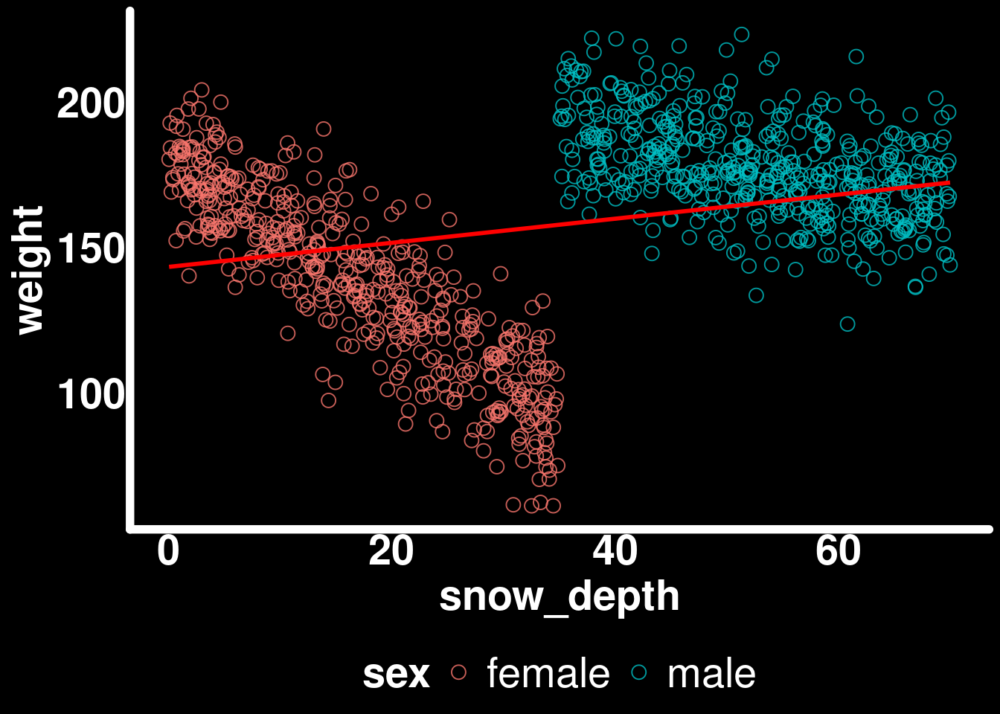
Regroupé : la profondeur de neige semble positivement associée au poids — même si les deux sexes perdent du poids avec plus de neige.
Pourquoi ? Le sexe est un facteur confondant
- Au sein de chaque sexe : plus de neige → poids plus faible (vraie relation négative)
- Entre les sexes : les mâles voient plus de neige et sont plus lourds (confusion)
- Les données regroupées comparent des mâles lourds à forte exposition à la neige à des femelles légères à faible exposition → tendance positive trompeuse
ggplot(bighorn_population) +
geom_point(aes(x = snow_depth, y = weight, color = sex)) +
geom_smooth(aes(x = snow_depth, y = weight), method = "lm", se = FALSE, color = "red") +
geom_smooth(aes(x = snow_depth, y = weight, color = sex), method = "lm", se = FALSE)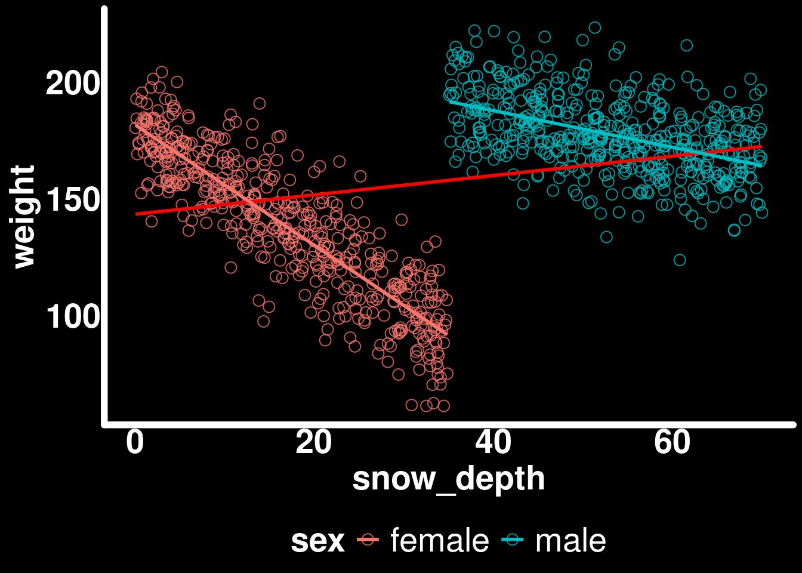
Exercice 1
À partir de bighorn_population :
- Ajustez
weight ~ sex * snow_depthavecglmmTMB(). Appelez-lemod_mass_true. - À partir du résumé, identifiez quel coefficient représente la pente de profondeur de neige pour les mâles. (Indice : elle n’est pas affichée directement — vous devez additionner deux lignes.)
- En une phrase, expliquez pourquoi un modèle naïf
weight ~ snow_depth(ignorant le sexe) induirait en erreur un gestionnaire cherchant à comprendre l’effet d’un hiver rigoureux. Pouvez-vous penser à un exemple d’une telle situation dans votre propre domaine ou vos propres recherches ?
(~5 minutes — discutez avec un collègue)
Échantillonnage dans la population
En pratique, nous ne pouvons pas mesurer tout le monde. Deux scénarios d’échantillonnage :
- Scénario 1 : piège équilibré, 50 mâles / 50 femelles
- Scénario 2 : piège biaisé, 80 mâles / 20 femelles
n_individuals <- 100
bighorn_mass_1 <- bighorn_population |>
group_by(sex) |>
slice_sample(n = n_individuals / 2, replace = FALSE) |>
ungroup()
mod_mass_1 <- glmmTMB(weight ~ sex * snow_depth,
data = bighorn_mass_1, family = gaussian())
summary(mod_mass_1)$coefficients$cond Estimate Std. Error z value Pr(>|z|)
(Intercept) 179.711531 3.4913367 51.473560 0.000000e+00
sexmale 39.011436 11.0092824 3.543504 3.948474e-04
snow_depth -2.495525 0.1717861 -14.526933 8.180169e-48
sexmale:snow_depth 1.686797 0.2685643 6.280794 3.368472e-10
attr(,"ddf")
[1] "asymptotic"Interprétation des coefficients :
- Intercept (ordonnée à l’origine) : poids des femelles à snow_depth = 0
- sexmale : différence d’ordonnée à l’origine mâle − femelle
- snow_depth : pente des femelles
- sexmale:snow_depth : différence de pente mâle − femelle
Utile pour les tests d’hypothèses, mais pas directement interprétable pour « quel est l’effet pour les mâles ? » — c’est à cela que sert marginaleffects.
Q1 : Les sexes diffèrent-ils en masse printanière ?
predictions(mod_mass_1, by = "sex")
sex Estimate Std. Error z Pr(>|z|) S 2.5 % 97.5 %
female 137 1.88 73.0 <0.001 Inf 133 141
male 178 1.88 95.1 <0.001 Inf 175 182
Type: responsepredictions(mod_mass_1, by = "sex") |>
hypotheses(hypothesis = "b1 - b2 = 0")
Hypothesis Estimate Std. Error z Pr(>|z|) S 2.5 % 97.5 %
b1-b2=0 -41.5 2.65 -15.7 <0.001 181.2 -46.7 -36.3Ceci est une prédiction marginale : la moyenne prédite par le modèle pour chaque sexe, moyennée sur la distribution observée de la profondeur de neige dans l’échantillon.
Q2 : La profondeur de neige affecte-t-elle la masse de la même façon selon le sexe ?
slopes(mod_mass_1, variables = "snow_depth", by = "sex", vcov = TRUE) |>
ggplot(aes(x = estimate, xmax = conf.high, xmin = conf.low, y = sex, color = sex)) +
geom_pointrange(size = 1) +
geom_vline(xintercept = female_loss, color = "red") +
geom_vline(xintercept = male_loss, color = "blue") +
theme(legend.position = "none")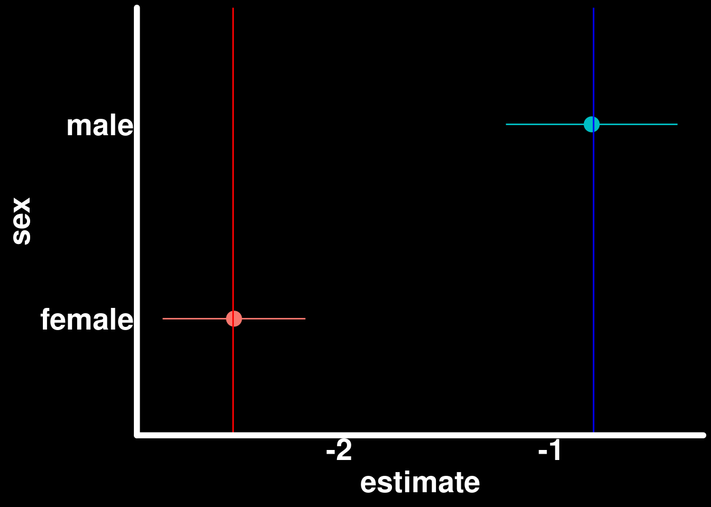
slopes(mod_mass_1, variables = "snow_depth", by = "sex", vcov = TRUE) |>
hypotheses(hypothesis = "b1 - b2 = 0")
Hypothesis Estimate Std. Error z Pr(>|z|) S 2.5 % 97.5 %
b1-b2=0 -1.69 0.269 -6.28 <0.001 31.5 -2.21 -1.16Q3 : Quelle est la pente moyenne pour la population ?
avg_slopes() calcule la pente pour chaque observation, puis fait la moyenne :
avg_slopes(mod_mass_1, variables = "snow_depth", vcov = TRUE)
Estimate Std. Error z Pr(>|z|) S 2.5 % 97.5 %
-1.65 0.134 -12.3 <0.001 113.1 -1.92 -1.39
Term: snow_depth
Type: response
Comparison: dY/dXmean(c(male_loss, female_loss)) # true simulated average[1] -1.65Effets marginaux vs. conditionnels, visualisés
avg_pred_mass_1 <- avg_predictions(mod_mass_1, variables = "snow_depth")
pred_sex_mass_1 <- predictions(mod_mass_1, newdata = bighorn_mass_1)
ggplot() +
geom_ribbon(data = avg_pred_mass_1,
aes(x = snow_depth, ymin = conf.low, ymax = conf.high),
color = "lightgreen", fill = "lightgreen", alpha = 0.4) +
geom_line(data = avg_pred_mass_1, aes(x = snow_depth, y = estimate),
color = "lightgreen") +
geom_ribbon(data = pred_sex_mass_1,
aes(x = snow_depth, ymin = conf.low, ymax = conf.high, color = sex, fill = sex),
alpha = 0.8) +
geom_line(data = pred_sex_mass_1, aes(x = snow_depth, y = estimate, color = sex)) +
geom_point(data = bighorn_mass_1, aes(y = weight, x = snow_depth, color = sex)) +
guides(alpha = "none", fill = "none") +
labs(title = "Vert = marginal; rouge/bleu = conditionnel (selon le sexe)") +
coord_cartesian(ylim = c(50, 220))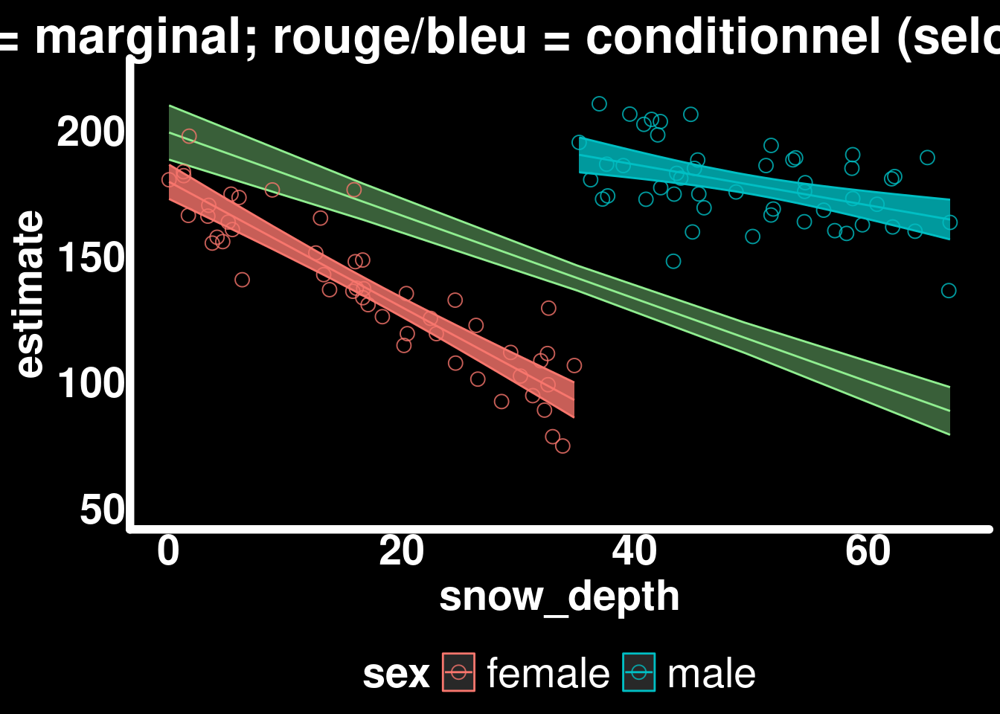
Scénario 2 : échantillonnage biaisé (80 % mâles)
bighorn_mass_2 <- bind_rows(
bighorn_population |> filter(sex == "male") |> slice_sample(n = 80),
bighorn_population |> filter(sex == "female") |> slice_sample(n = 20)
)
mod_mass_2 <- glmmTMB(weight ~ sex * snow_depth, data = bighorn_mass_2, family = gaussian())
summary(mod_mass_2) Family: gaussian ( identity )
Formula: weight ~ sex * snow_depth
Data: bighorn_mass_2
AIC BIC logLik -2*log(L) df.resid
845.8 858.9 -417.9 835.8 95
Dispersion estimate for gaussian family (sigma^2): 250
Conditional model:
Estimate Std. Error z value Pr(>|z|)
(Intercept) 182.7351 7.5600 24.171 < 2e-16 ***
sexmale 35.8867 12.7414 2.817 0.00485 **
snow_depth -2.5263 0.3534 -7.149 8.76e-13 ***
sexmale:snow_depth 1.7521 0.4027 4.351 1.36e-05 ***
---
Signif. codes: 0 '***' 0.001 '**' 0.01 '*' 0.05 '.' 0.1 ' ' 1avg_slopes(mod_mass_2, variables = "snow_depth", vcov = TRUE)
Estimate Std. Error z Pr(>|z|) S 2.5 % 97.5 %
-1.12 0.17 -6.62 <0.001 34.7 -1.46 -0.792
Term: snow_depth
Type: response
Comparison: dY/dXLes pentes conditionnelles (selon le sexe) restent proches de la vérité. Mais la pente marginale est biaisée vers le sexe surreprésenté, à effet plus faible (les mâles).
Corriger un biais d’échantillonnage connu
Si nous connaissons le vrai ratio des sexes dans la population (50:50), nous pouvons moyenner sur une grille newdata équilibrée plutôt que sur notre échantillon biaisé.
newdata_balanced <- bighorn_mass_2 |>
group_by(sex) |>
reframe(snow_depth = seq(min(snow_depth), max(snow_depth), length.out = 50)) |>
ungroup()Exercice 2
À l’aide du modèle ajusté à la population entière et de celui ajusté à l’échantillon biaisé, utilisez la fonction avg_predictions() ainsi qu’une grille de prédiction équilibrée et une grille non équilibrée pour créer un graphique comparant les prédictions marginales entre la vraie population, les prédictions de la population biaisée et les prédictions de la population corrigée. Il devrait y avoir trois droites de tendance.
(~15 minutes)
Points à retenir de la Partie 1
- Les interactions → des effets conditionnels qui dépendent d’autres variables
- Le paradoxe de Simpson est un risque réel lors du regroupement de groupes confondus
- Marginal ≠ conditionnel; les deux sont valides mais répondent à des questions différentes
- Les coefficients bruts d’un modèle égalent rarement la quantité de recherche qui vous intéresse — utilisez
marginaleffects - Les effets marginaux héritent de la distribution des covariables de votre échantillon, à moins que vous ne la remplaciez avec
newdata
Partie 2 — Interactions numériques × numériques
Deux prédicteurs numériques
Avec deux prédicteurs continus, une interaction signifie : la pente d’un prédicteur change à mesure que l’autre prédicteur change — pas une pente séparée par groupe, mais une pente qui glisse.
Un coefficient brut n’est que « la pente lorsque l’autre prédicteur vaut zéro » — ce qui n’a de sens que si zéro est une valeur significative. Cela motive le centrage des prédicteurs sur leur moyenne, de sorte que l’ordonnée à l’origine et les coefficients des effets principaux décrivent des conditions moyennes.
Étude de cas : longueur des pétales
Fleurs simulées; longueur des pétales en fonction de la température et de la pluie, avec une interaction. Les prédicteurs sont centrés sur la moyenne : l’ordonnée à l’origine devient la réponse prédite dans des conditions moyennes plutôt qu’à une température ou une pluviométrie nulle (biologiquement dénuée de sens).
n_flowers <- 200
temperature <- rnorm(n_flowers, mean = 10, sd = 15)
rain <- rgamma(n_flowers, shape = 2)
avg_petal_length <- 25.6; sd_petal_length <- 4.5
temperature_effect <- 0.4; rain_effect <- 0.9; interaction_effect <- 0.2
flower_measurements_1 <- tibble(
temp_centered = temperature - mean(temperature),
rain_centered = rain - mean(rain),
petal_length = rnorm(n_flowers,
mean = avg_petal_length +
temperature_effect * temp_centered +
rain_effect * rain_centered +
interaction_effect * temp_centered * rain_centered,
sd = sd_petal_length)
)
mod_flower_1 <- glmmTMB(petal_length ~ temp_centered * rain_centered,
data = flower_measurements_1)
summary(mod_flower_1)$coefficients$cond Estimate Std. Error z value Pr(>|z|)
(Intercept) 24.7315526 0.34191019 72.333477 0.000000e+00
temp_centered 0.4441477 0.02209133 20.105064 6.663435e-90
rain_centered 1.0517379 0.26351075 3.991253 6.572525e-05
temp_centered:rain_centered 0.2181736 0.01616323 13.498145 1.603630e-41
attr(,"ddf")
[1] "asymptotic"Chaque terme a une petite valeur-p — mais que signifient ces nombres pour notre question de recherche ? Il est temps de les décortiquer.
Pente d’un prédicteur à une seule valeur de l’autre
# Effect of temperature when rain_centered = 0 (i.e., average rain)
slopes(mod_flower_1, newdata = datagrid(rain_centered = 0),
variables = "temp_centered")
rain_centered Estimate Std. Error z Pr(>|z|) S 2.5 % 97.5 %
0 0.444 0.0221 20.1 <0.001 296.2 0.401 0.487
Term: temp_centered
Type: response
Comparison: dY/dXCeci correspond directement au coefficient de temp_centered — parce que la pluie est centrée, « à pluie = 0 » signifie « à pluie moyenne ».
Pente à travers l’étendue du modérateur
slopes_by_temp <- slopes(mod_flower_1,
newdata = datagrid(temp_centered = seq(min(flower_measurements_1$temp_centered),
max(flower_measurements_1$temp_centered), length.out = 30)),
variables = "rain_centered", by = "temp_centered")
trend_slope_temp <- coef(lm(estimate ~ temp_centered, data = slopes_by_temp))[["temp_centered"]]
slopes_by_temp |>
ggplot() +
geom_hline(yintercept = 0, color = "blue", linewidth = 1.5, linetype = 2) +
geom_ribbon(aes(x = temp_centered + mean(temperature), ymin = conf.low, ymax = conf.high),
alpha = 0.4, fill = "lightgrey") +
geom_line(aes(x = temp_centered + mean(temperature), y = estimate),
lineend = "round", linewidth = 2, color = "white") +
annotate("text", x = -Inf, y = Inf, hjust = -0.2, vjust = 1.5,
label = paste0("slope = ", round(trend_slope_temp, 3)),
color = "white", size = 6, fontface = "bold") +
scale_x_continuous(breaks = seq(-25, 50, by = 5)) +
labs(y = "Effet de la pluie sur la longueur des pétales", x = "Valeurs de température")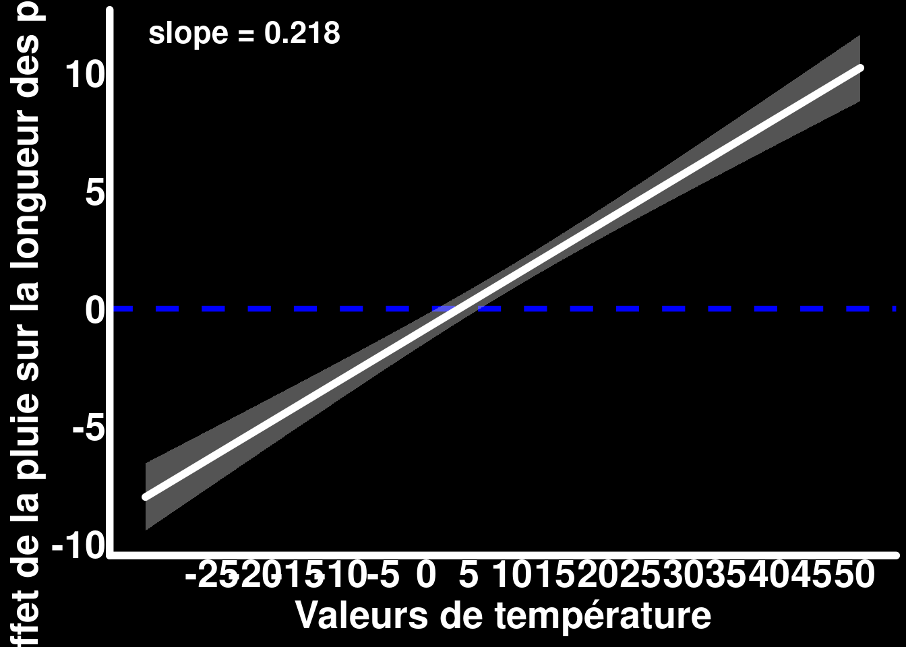
Le coefficient d’interaction est exactement la pente de cette droite — à quel point l’effet de la pluie change par unité de température.
Visualiser les prédictions à des valeurs choisies du modérateur
Choix courant : le résumé en cinq nombres du modérateur.
predictions(mod_flower_1,
newdata = datagrid(
temp_centered = seq(min(flower_measurements_1$temp_centered),
max(flower_measurements_1$temp_centered), length.out = 30),
rain_centered = fivenum
)) |>
as_tibble() |>
mutate(rain = round(rain_centered + mean(rain), 2)) |>
ggplot() +
geom_line(aes(y = estimate, x = temp_centered + mean(temperature), color = as.factor(rain)),
lineend = "round", linewidth = 1.5) +
geom_ribbon(aes(ymin = conf.low, ymax = conf.high,
x = temp_centered + mean(temperature), fill = as.factor(rain)), alpha = 0.2) +
labs(y = "Longueur des pétales prédite", x = "Température", color = "Pluie", fill = "Pluie") +
coord_cartesian(ylim = c(0, 50))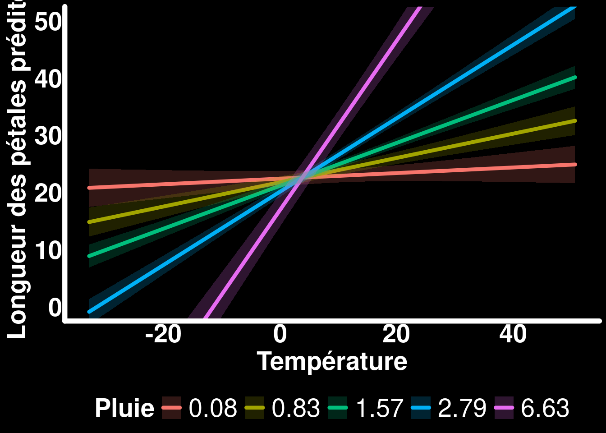
Surfaces de réponse — à utiliser avec prudence
predictions(mod_flower_1,
newdata = datagrid(
temp_centered = seq(min(flower_measurements_1$temp_centered),
max(flower_measurements_1$temp_centered), length.out = 30),
rain_centered = seq(min(flower_measurements_1$rain_centered),
max(flower_measurements_1$rain_centered), length.out = 30)
)) |>
as_tibble() |>
mutate(rain = rain_centered + mean(rain), temp = temp_centered + mean(temperature)) |>
ggplot(aes(x = rain, y = temp, z = estimate)) +
stat_contour_filled() +
labs(x = "Pluie", y = "Température", fill = "Longueur des pétales prédite")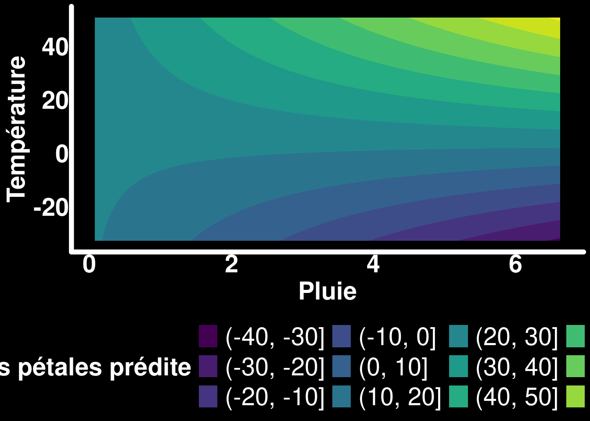
Les intervalles de contour sont arbitraires et masquent l’incertitude — bons pour l’exploration, risqués pour une inférence de qualité publiable. Préférez les graphiques ligne-et-ruban lorsque vous le pouvez.
Exercice 3
À partir de mod_flower_1 :
- Calculez la pente de la température sur l’étendue observée de la pluie (reproduisez le graphique de la pluie en fonction de la température ci-dessus).
- À quelle valeur de pluie l’effet de la température devient-il non significatif (l’IC traverse zéro), le cas échéant ?
- Réécrivez en une seule phrase la question de recherche à laquelle ce modèle pourrait répondre, en identifiant quelle variable est l’exposition et laquelle est le modérateur.
(~10 minutes)
Les interactions au-delà de la moyenne : la régression distributionnelle
Les interactions n’ont pas à agir uniquement sur la réponse moyenne. L’argument dispformula de glmmTMB permet à des prédicteurs d’affecter aussi l’écart-type — utile lorsque la variance elle-même a un sens écologique (p. ex. une variance de trait réduite sous le stress).
log_sd_intercept <- log(sd_petal_length)
log_sd_temp_slope <- 0.03
flower_measurements_2 <- tibble(
temp_centered = temperature - mean(temperature),
rain_centered = rain - mean(rain),
petal_length = rnorm(n_flowers,
mean = avg_petal_length + temperature_effect * temp_centered,
sd = exp(log_sd_intercept + log_sd_temp_slope * temp_centered))
)ggplot(flower_measurements_2, aes(x = temp_centered + mean(temperature), y = petal_length)) +
geom_smooth(method = "lm", color = "red", se = FALSE) +
geom_point() +
labs(x = "Température", y = "Longueur des pétales observée")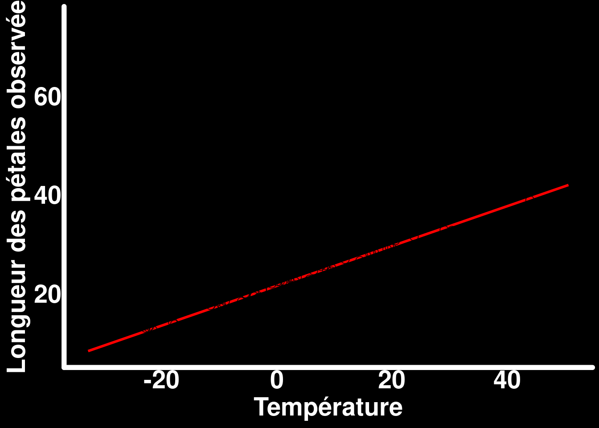
mod_flower_2 <- glmmTMB(petal_length ~ temp_centered,
dispformula = ~ temp_centered,
data = flower_measurements_2)Vérifier le modèle de dispersion
pred_sd_temp <- predictions(mod_flower_2, newdata = flower_measurements_2, type = "disp") |>
as_tibble()
true_sd_temp <- flower_measurements_2 |>
mutate(true_sd = exp(log_sd_intercept + log_sd_temp_slope * temp_centered))
ggplot() +
geom_line(data = true_sd_temp,
aes(x = temp_centered + mean(temperature), y = true_sd, color = "Simulated"),
linetype = "dashed") +
geom_ribbon(data = pred_sd_temp,
aes(ymin = conf.low, ymax = conf.high, x = temp_centered + mean(temperature)),
fill = "red", alpha = 0.3) +
geom_line(data = pred_sd_temp,
aes(x = temp_centered + mean(temperature), y = estimate, color = "Estimated")) +
scale_color_manual(values = c("Simulated" = "darkgreen", "Estimated" = "red"), name = "Écart-type") +
labs(x = "Température", y = "Écart-type")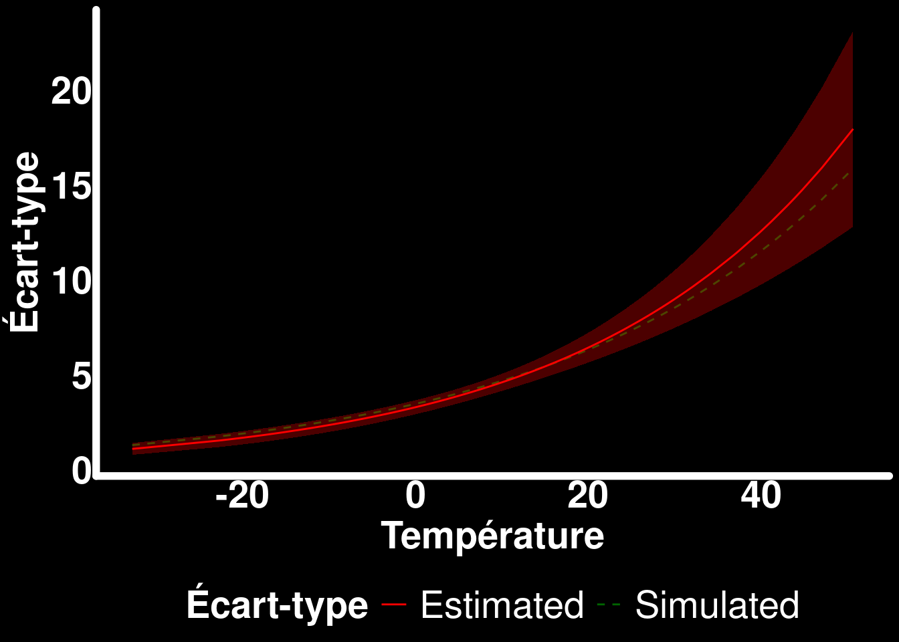
type = "disp" récupère les prédictions/pentes pour le sous-modèle de dispersion, exactement comme type = "conditional" le fait pour la moyenne.
Simuler et ajuster des interactions sur l’écart-type
log_sd_rain_slope <- 0.02
log_sd_interaction_effect <- 0.005
flower_measurements_3 <- tibble(
temp_centered = temperature - mean(temperature),
rain_centered = rain - mean(rain),
petal_length = rnorm(
n = n_flowers,
mean = avg_petal_length +
temperature_effect * temp_centered +
rain_effect * rain_centered,
sd = exp(log_sd_intercept +
log_sd_temp_slope * temp_centered +
log_sd_rain_slope * rain_centered +
log_sd_interaction_effect * temp_centered * rain_centered))
)
mod_flower_measurements_3 <- glmmTMB(petal_length ~ temp_centered + rain_centered,
dispformula = ~ temp_centered + rain_centered + temp_centered * rain_centered,
data = flower_measurements_3)Nous pouvons interpréter les effets interactifs de la pluie et de la température sur l’écart-type de la longueur des pétales de la même façon que nous le ferions pour la moyenne (voir le tutoriel sur les interactions numériques × numériques pour des exemples détaillés). Une autre façon de communiquer les résultats : puisque les deux paramètres de la distribution Normale agissent ensemble pour générer les observations, nous pouvons prédire de nouvelles distributions d’observations pour différentes valeurs des prédicteurs.
Prédire de nouvelles observations
predicted_observations <- predictions(mod_flower_measurements_3,
newdata = datagrid(
temp_centered = fivenum,
rain_centered = fivenum
),
type = "conditional") |>
as_tibble() |>
select(temp_centered, rain_centered, estimate) |>
rename(mu = estimate) |>
left_join(predictions(mod_flower_measurements_3,
newdata = datagrid(
temp_centered = fivenum,
rain_centered = fivenum
),
type = "disp") |>
as_tibble() |>
select(temp_centered, rain_centered, estimate) |>
rename(sd = estimate)) |>
rowwise() |>
mutate(temp_centered = round(temp_centered),
rain_centered = round(rain_centered),
pred_obs = dist_normal(mu = mu, sd = sd))
# Build facet labels dynamically from the actual rounded temp_centered values
# (hardcoding them would silently show NA facet labels if the simulated data changes)
temp_labels <- setNames(
paste0("temp = ", sort(unique(predicted_observations$temp_centered))),
sort(unique(predicted_observations$temp_centered))
)
ggplot(predicted_observations, aes(xdist = pred_obs, color = as.factor(rain_centered))) +
stat_slab(fill = NA, normalize = "xy") +
scale_color_brewer(palette = "Accent") +
facet_wrap(~ as.factor(temp_centered), scales = "free", labeller = as_labeller(temp_labels)) +
labs(x = "Longueur des pétales prédite", color = "Pluie (centrée)") +
theme(axis.line.y = element_blank(),
axis.text.y = element_blank(),
axis.title.y = element_blank(),
strip.text = element_text(color = "black", face = "bold", size = 12))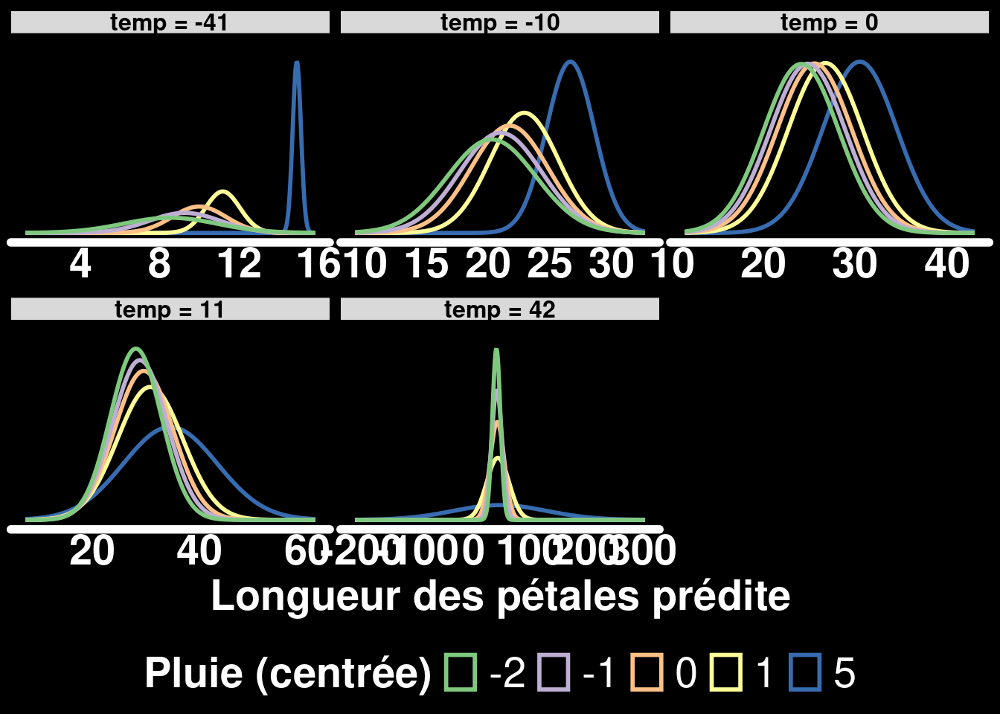
Points à retenir de la Partie 2
- Avec deux prédicteurs numériques, le coefficient d’interaction est le taux de variation d’une pente par unité de l’autre — pas une pente séparée pour chaque groupe
- Centrer les prédicteurs rend les coefficients des effets principaux interprétables comme « l’effet dans des conditions moyennes »
- Tracez les pentes sur toute l’étendue du modérateur, pas seulement le tableau de coefficients
- Les graphiques de prédiction basés sur le résumé en cinq nombres sont généralement plus honnêtes que les surfaces de réponse (ils conservent l’incertitude)
- Les interactions peuvent agir sur la variance, pas seulement sur la moyenne, via la régression distributionnelle (
dispformula)
Partie 3 — Les fonctions de lien créent des interactions implicites
Jusqu’à présent, toutes les interactions que nous avons vues étaient inscrites explicitement dans la formule du modèle (X1 * X2). Les fonctions de lien non linéaires (logit, log, …) introduisent une seconde source d’interaction, implicite celle-là : même un modèle sans aucun terme d’interaction peut présenter des prédicteurs dont l’effet sur l’échelle de réponse dépend des valeurs des autres prédicteurs. Cela se produit parce que la fonction de lien courbe une droite (sur l’échelle du lien) en une courbe (sur l’échelle de réponse) — et l’ampleur avec laquelle une poussée fixe sur l’échelle du lien déplace la réponse dépend de l’endroit où l’on se trouve sur cette courbe.
Étude de cas : occurrence d’une espèce
Présence/absence simulée d’une espèce sur 200 parcelles, en fonction du couvert forestier, de la pluie et de la température — aucun terme d’interaction, ajusté avec un GLM binomial (lien logit).
n_plots <- 200
tree_cover <- dist_mixture(dist_beta(4, 0.8), dist_beta(0.8, 4), weights = c(0.5, 0.5))
avg_yearly_rain <- dist_gamma(shape = 3, rate = 0.7)
avg_yearly_temp <- dist_normal(mu = 20, sd = 10)
occurence_intercept <- 0.047
occurence_tree_effect <- 0.45
occurence_rain_effect <- 0.02
occurence_temp_effect <- 0.03
occ_data <- tibble(
tree_cov = generate(tree_cover, n_plots),
rain = generate(avg_yearly_rain, n_plots),
temp = generate(avg_yearly_temp, n_plots)
) |>
unnest(everything()) |>
mutate(occurence = rbinom(n_plots, size = 1,
prob = occurence_intercept +
occurence_tree_effect * tree_cov +
occurence_rain_effect * rain +
occurence_temp_effect * temp))Ajuster le modèle
mod_1 <- glmmTMB(occurence ~ tree_cov + rain + temp, family = binomial(link = "logit"), data = occ_data)
summary(mod_1)$coefficients$cond Estimate Std. Error z value Pr(>|z|)
(Intercept) -2.17374411 0.8385507 -2.5922632 9.534679e-03
tree_cov 3.76005897 0.9372601 4.0117561 6.026875e-05
rain -0.05046963 0.1077608 -0.4683488 6.395352e-01
temp 0.15045030 0.0371749 4.0470932 5.185760e-05
attr(,"ddf")
[1] "asymptotic"Nous avons simulé un effet du couvert forestier de 0,45 sur l’échelle de probabilité, mais le modèle rapporte ~3,76. Ce n’est pas une erreur — il rapporte le coefficient sur l’échelle log-cote (log-odds), pas sur l’échelle de probabilité.
Le lien logit courbe une droite en une forme en S
tibble(log_odds = seq(-6, 6, length.out = 400)) |>
mutate(probability = plogis(log_odds)) |>
ggplot(aes(x = log_odds, y = probability)) +
geom_line() +
labs(x = "échelle log-cote (ce que le coefficient décrit)",
y = "échelle de probabilité (ce qui nous intéresse)")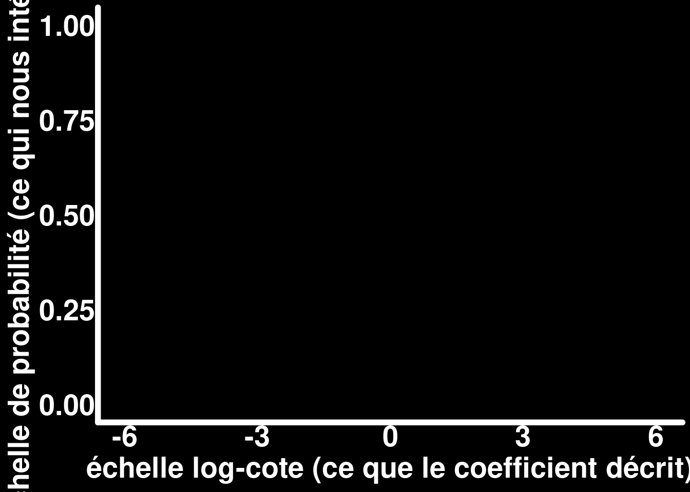
Près du milieu (p ≈ 0,5), la courbe est abrupte : une petite poussée en log-cote déplace beaucoup la probabilité. Près des extrémités (p ≈ 0 ou 1), la courbe s’aplatit : la même poussée déplace à peine la probabilité. Aucune dérivée manuelle n’est nécessaire — marginaleffects convertit automatiquement vers l’échelle qui nous intéresse réellement.
marginaleffects fait ce travail pour nous
slopes(mod_1, variables = "tree_cov",
newdata = datagrid(temp = mean(occ_data$temp), rain = mean(occ_data$rain)))
temp rain Estimate Std. Error z Pr(>|z|) S 2.5 % 97.5 %
19.5 4.22 0.426 0.104 4.09 <0.001 14.5 0.221 0.63
Term: tree_cov
Type: response
Comparison: dY/dXslopes() demande ici : « à ces valeurs de covariables, de combien la probabilité prédite change-t-elle pour une petite augmentation du couvert forestier ? » — une réponse sur l’échelle de probabilité, directement comparable à la façon dont nous avons simulé les données.
L’interaction implicite, visualisée
slopes(mod_1, variables = "tree_cov", newdata = datagrid(temp = fivenum, rain = fivenum)) |>
mutate(temp = round(temp), rain = round(rain)) |>
ggplot() +
geom_pointrange(aes(x = estimate, xmin = conf.low, xmax = conf.high, y = 1)) +
geom_vline(xintercept = occurence_tree_effect, alpha = .8) +
facet_grid(rain ~ temp) +
theme(axis.title.y = element_blank(), axis.text.y = element_blank())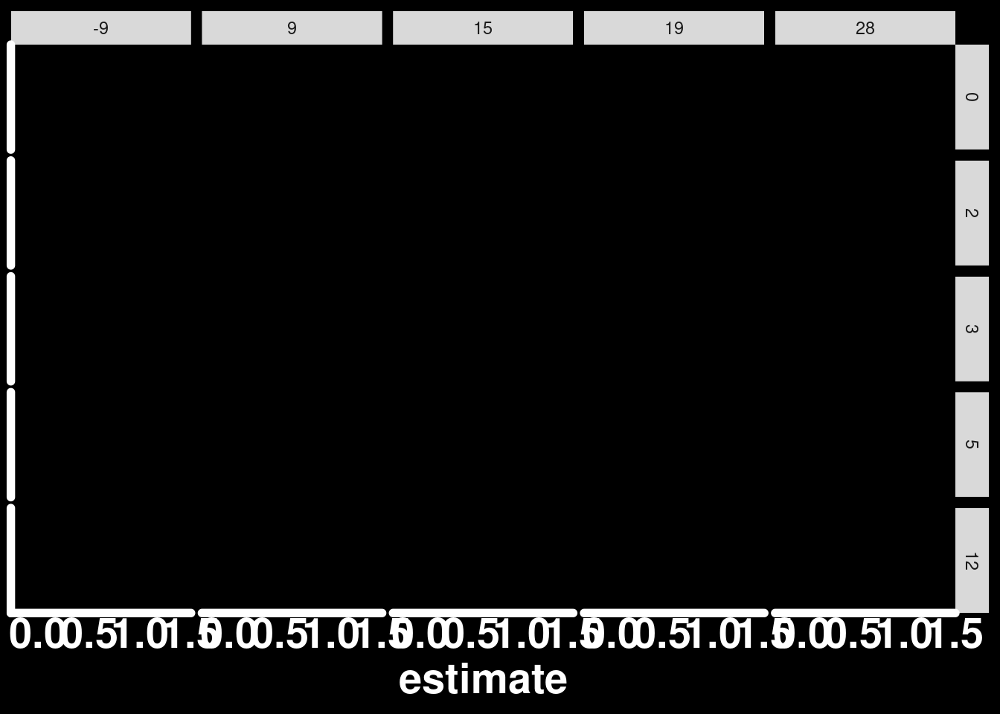
Parce que l’ampleur de la « courbure » dépend de l’endroit où l’on se trouve sur la courbe en S, l’effet du couvert forestier sur l’échelle de probabilité dépend aussi de la pluie et de la température — même si nous n’avons jamais dit au modèle d’inclure cette interaction. Le fait qu’une interaction « existe » peut dépendre de l’échelle à laquelle on regarde (additive/probabilité vs. multiplicative/log-cote) — voir Spake et al. (2023) pour en savoir plus sur cette erreur de « type D ».
Échelle de réponse vs. échelle du lien, selon chaque modérateur
slopes_by_temp_response <- slopes(mod_1,
newdata = datagrid(temp = seq(min(occ_data$temp), max(occ_data$temp), length.out = 30),
rain = mean(occ_data$rain)),
variables = "tree_cov", by = "temp", type = "response") |> as_tibble()
slopes_by_temp_link <- slopes(mod_1,
newdata = datagrid(temp = seq(min(occ_data$temp), max(occ_data$temp), length.out = 30),
rain = mean(occ_data$rain)),
variables = "tree_cov", by = "temp", type = "link") |> as_tibble()
slopes_by_rain_response <- slopes(mod_1,
newdata = datagrid(rain = seq(min(occ_data$rain), max(occ_data$rain), length.out = 30),
temp = mean(occ_data$temp)),
variables = "tree_cov", by = "rain", type = "response") |> as_tibble()
slopes_by_rain_link <- slopes(mod_1,
newdata = datagrid(rain = seq(min(occ_data$rain), max(occ_data$rain), length.out = 30),
temp = mean(occ_data$temp)),
variables = "tree_cov", by = "rain", type = "link") |> as_tibble()
plot_slope <- function(data, x, y_lab, scale_title) {
ggplot(data) +
geom_hline(yintercept = 0, color = "blue", linetype = 2) +
geom_ribbon(aes(x = .data[[x]], ymin = conf.low, ymax = conf.high), alpha = 0.4, fill = "lightgrey") +
geom_line(aes(x = .data[[x]], y = estimate)) +
labs(y = y_lab, x = x, title = scale_title)
}
(plot_slope(slopes_by_temp_response, "temp", "Pente de tree_cov\n(échelle de probabilité)", "Échelle de réponse") +
plot_slope(slopes_by_temp_link, "temp", "Pente de tree_cov\n(échelle log-cote)", "Échelle du lien")) /
(plot_slope(slopes_by_rain_response, "rain", "Pente de tree_cov\n(échelle de probabilité)", "Échelle de réponse") +
plot_slope(slopes_by_rain_link, "rain", "Pente de tree_cov\n(échelle log-cote)", "Échelle du lien"))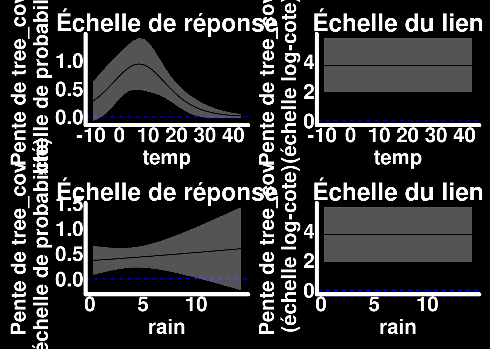
Échelle log-cote (lien) : la pente de tree_cov est stable (~3,76) selon les deux modérateurs — exactement ce qui est attendu, puisque la formule de mod_1 ne contient aucun terme d’interaction. Échelle de probabilité (réponse) : la pente varie visiblement avec la température (et plus faiblement avec la pluie) — l’interaction implicite rendue concrète, purement à cause de la courbure du lien logit. Avec trois prédicteurs, la pente d’une variable focale ne peut plus être montrée selon « le » modérateur en un seul graphique 2D — chaque panneau ci-dessus maintient l’autre prédicteur restant fixé à sa moyenne. Alternatives : facetter selon la troisième variable, utiliser de petits multiples à des valeurs représentatives (p. ex. le résumé en cinq nombres), ou rapporter un seul avg_slopes() qui intègre sur la distribution observée plutôt que de la fixer.
L’effet « global » du couvert forestier
avg_predictions(mod_1, variables = "tree_cov", vcov = TRUE) |>
ggplot() +
geom_ribbon(aes(x = tree_cov, ymin = conf.low, ymax = conf.high), fill = "lightgrey", alpha = 0.4) +
geom_line(aes(x = tree_cov, y = estimate)) +
labs(y = "Occurrence prédite")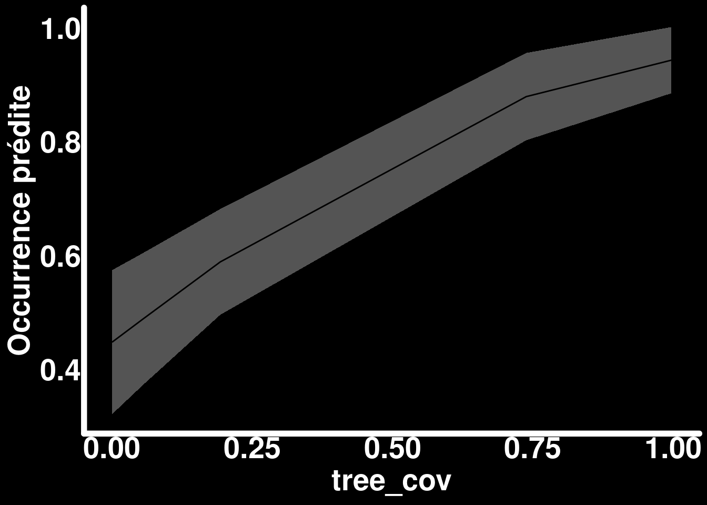
avg_predictions()/avg_slopes() donnent un seul nombre (ou une seule courbe) par valeur focale, intégrant sur la pluie et la température telles qu’observées dans l’échantillon — une alternative marginale, d’« effet moyen », au fait de choisir une seule valeur de modérateur sur laquelle conditionner.
🧪 Exercice 5
À partir de mod_1 :
- Tracez la tendance prédite de l’occurrence en fonction du couvert forestier pour les combinaisons uniques du résumé en cinq nombres de la pluie et de la température. Indice : utilisez la fonction
predictions(). - Tracez la prédiction pour l’effet moyen de la température.
(~20 minutes)
Le réviseur 2 veut un tableau
# Average slopes on the probability scale for all three predictors
slopes_tbl_mod1 <- avg_slopes(mod_1, variables = c("tree_cov", "rain", "temp"), type = "response") |>
as_tibble() |>
select(term, estimate, conf.low, conf.high, p.value) |>
mutate(
across(c(estimate, conf.low, conf.high), ~ round(.x, 3)),
p.value = if_else(p.value < 0.001, "<0.001", as.character(round(p.value, 3)))
) |>
mutate(CI_95 = glue::glue("[{conf.low}, {conf.high}]")) |>
select(Predictor = term, Slope = estimate, `95% CI` = CI_95, `p-value` = p.value)
# Tjur's R2 as an extra row in the same 4-column layout
r2_row <- tibble(
Predictor = "Tjur's R\u00b2",
Slope = as.character(round(r2_tjur(mod_1), 3)),
`95% CI` = "",
`p-value` = ""
)
mod1_tbl <- bind_rows(
slopes_tbl_mod1 |> mutate(across(everything(), as.character)),
r2_row
)
mod1_tbl |>
tt(caption = "Average slopes of occurrence on the probability scale, and Tjur's R2 for mod_1") |>
style_tt(i = nrow(slopes_tbl_mod1) + 1, bold = TRUE, line = "t", line_color = "black", line_width = 0.1)| Predictor | Slope | 95% CI | p-value |
|---|---|---|---|
| rain | -0.008 | [-0.04, 0.025] | 0.639 |
| temp | 0.023 | [0.015, 0.031] | <0.001 |
| tree_cov | 0.583 | [0.371, 0.795] | <0.001 |
| Tjur's R² | 0.272 |
Étude de cas : abondance d’une espèce
Le même phénomène se manifeste avec des données de comptage. L’abondance (si présente) en fonction des trois mêmes prédicteurs, ajustée avec un GLM de Poisson (lien log), encore une fois sans terme d’interaction.
abundance_intercept <- exp(1)
abundance_tree_effect <- 4.5
abundance_rain_effect <- 0.1
abundance_temp_effect <- 0.1
abund_data <- tibble(
tree_cov = generate(tree_cover, n_plots),
rain = generate(avg_yearly_rain, n_plots),
temp = generate(avg_yearly_temp, n_plots)
) |>
unnest(everything()) |>
mutate(abundance = rpois(n_plots, lambda =
abundance_intercept +
abundance_tree_effect * tree_cov +
abundance_rain_effect * rain +
abundance_temp_effect * temp))
mod_2 <- glmmTMB(abundance ~ tree_cov + rain + temp, family = poisson(link = "log"), data = abund_data)
summary(mod_2)$coefficients$cond Estimate Std. Error z value Pr(>|z|)
(Intercept) 1.18837023 0.096421929 12.324688 6.670081e-35
tree_cov 0.69841642 0.073099908 9.554272 1.244556e-21
rain 0.01651775 0.010934451 1.510616 1.308864e-01
temp 0.01791748 0.002822861 6.347276 2.191609e-10
attr(,"ddf")
[1] "asymptotic"Le coefficient de tree_cov sur l’échelle log est ~0,73, pas 4,5 — le même phénomène que pour le lien logit, simplement une courbe différente.
Le lien log courbe une droite en une courbe
tibble(log_count = seq(-2, 6, length.out = 400)) |>
mutate(count = exp(log_count)) |>
ggplot(aes(x = log_count, y = count)) +
geom_line() +
labs(x = "échelle log (ce que le coefficient décrit)", y = "échelle de comptage (ce qui nous intéresse)")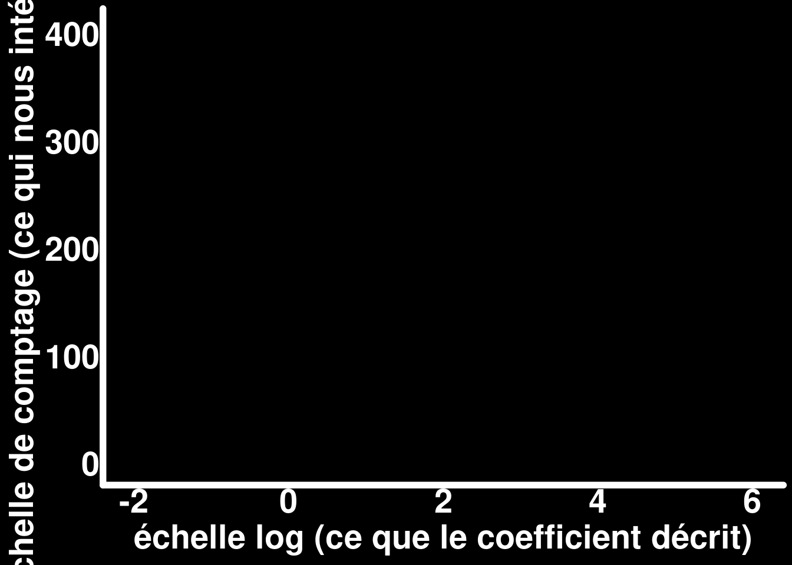
Deux façons de rapporter un coefficient de lien log
- Ratio de taux (rate ratio) : un effet multiplicatif constant, valide partout — « chaque augmentation d’une unité du couvert forestier multiplie l’abondance attendue par ce facteur, indépendamment de la pluie ou de la température »
- Pente locale : un effet additif, sur l’échelle de comptage (« ce nombre d’individus en plus »), mais valide seulement près des valeurs de covariables utilisées
Calculer le ratio de taux
exp(fixef(mod_2)$cond["tree_cov"]) # rate ratio: ~2.08, i.e. a ~108% increase per unit tree covertree_cov
2.010566 Les deux décrivent le même modèle sous-jacent — choisissez celui qui correspond à votre public (changement en pourcentage vs. un décompte concret d’individus).
🧪 Exercice 6
À partir de mod_2 :
- Calculez le ratio de taux et la pente locale sur l’échelle de comptage pour
temp, en maintenantrainà son minimum (un scénario de « sécheresse ») ettree_covà sa moyenne. - Répétez en maintenant
tree_covà une valeur faible vs. élevée (p. ex. les 10e et 90e centiles) — le ratio de taux change-t-il ? La pente locale change-t-elle ? - Expliquez, dans vos propres mots, pourquoi l’un de ces deux résumés reste constant selon
tree_covet pas l’autre.
(~7 minutes)
Étude de cas : occurrence et abondance ensemble
En réalité, une espèce doit d’abord être présente avant que nous puissions mesurer son abondance. Un modèle hurdle combine deux sous-modèles ajustés conjointement :
- Une composante binomiale (lien logit) : une parcelle franchit-elle la « barrière » du zéro ? (occurrence)
- Une composante de comptage tronqué : étant donné qu’elle est non nulle, combien d’individus ? (abondance si présent)
Deux façons d’interpréter : chaque partie séparément (ce qui détermine l’occurrence vs. l’abondance), ou combinées à l’échelle de la population (abondance attendue sur toutes les parcelles = P(occurrence) × E[abondance | présence]).
Un exemple simple de modèle hurdle
# Simple hurdle simulation: abundance_pres = counts if present; occurence = presence;
# abundance_pop = observed count in every plot (zero wherever the species is absent)
simple_pop_data <- tibble(
tree_cov = generate(tree_cover, n_plots)
) |>
unnest(everything()) |>
mutate(abundance_pres = rpois(n_plots, lambda =
abundance_intercept +
abundance_tree_effect * tree_cov
),
occurence = rbinom(n_plots, size = 1,
prob = occurence_intercept +
occurence_tree_effect * tree_cov),
abundance_pop = abundance_pres * occurence)
# Hurdle model: main formula is the (zero-truncated Poisson) abundance-when-present part;
# zi = ~ tree_cov models the probability of a structural zero (absence) with a logit link
mod_hu_simple <- glmmTMB(abundance_pop ~ tree_cov,
zi = ~ tree_cov,
family = truncated_poisson,
data = simple_pop_data)Prédictions à l’échelle de la population vs. uniquement si présent
# type = "response": population-scale expected abundance across ALL plots (P(present) x count)
pred_resp_simple <- predictions(mod_hu_simple, type = "response") |> mutate(type = "response")
# type = "zprob": predicted probability of a structural zero (i.e. NOT occurring)
pred_prob_simple <- predictions(mod_hu_simple, type = "zprob")
# type = "conditional": expected abundance given the species is present
pred_cond_simple <- predictions(mod_hu_simple, type = "conditional") |> mutate(type = "conditional")
pred_abun_simple <- bind_rows(pred_resp_simple, pred_cond_simple)
plot_pred_abun_simple <- ggplot(pred_abun_simple) +
geom_ribbon(aes(x = tree_cov, ymin = conf.low, ymax = conf.high, fill = type), alpha = 0.2) +
geom_line(aes(x = tree_cov, y = estimate, color = type)) +
labs(x = "Couvert forestier", y = "Abondance", color = "Type de prédiction", fill = "Type de prédiction")
# zprob is P(structural zero), so 1 - zprob is the occurrence probability
plot_pred_prob_simple <- ggplot(pred_prob_simple) +
geom_ribbon(aes(x = tree_cov, ymin = 1 - conf.high, ymax = 1 - conf.low), fill = "lightgrey", alpha = 0.4) +
geom_line(aes(x = tree_cov, y = 1 - estimate)) +
labs(x = "Couvert forestier", y = "Probabilité d'occurrence")
plot_pred_abun_simple / plot_pred_prob_simple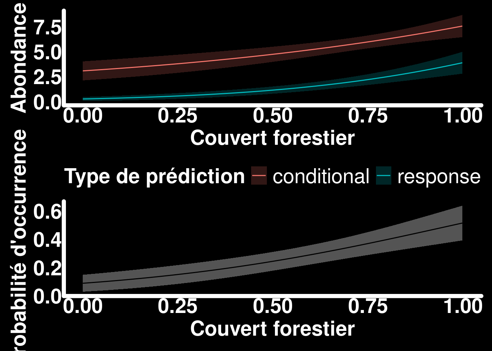
L’abondance prédite si présent (conditionnelle) est toujours plus élevée que l’abondance à l’échelle de la population (réponse), puisque la probabilité d’occurrence est inférieure à 100 %. Il s’agit d’une interaction implicite entre les deux parties du modèle : l’effet du couvert forestier sur l’abondance à l’échelle de la population dépend de son effet à la fois sur l’occurrence et sur l’abondance si présent.
Simuler avec une interaction explicite
Les proies et les compétiteurs interagissent dans leur effet sur l’abondance (si présent); le couvert forestier détermine seulement l’occurrence. Les prédicteurs sont simulés à travers la fonction de lien inverse du modèle lui-même (exp(), plogis()) afin de demeurer dans une plage valide.
more_plots <- 4000
prey_abun <- dist_poisson(lambda = 6)
competitor_abun <- dist_poisson(lambda = 3)
pop_data <- tibble(
tree_cov = generate(tree_cover, more_plots),
prey = generate(prey_abun, more_plots),
competitors = generate(competitor_abun, more_plots)
) |>
unnest(everything()) |>
mutate(
abundance_pres = rpois(more_plots,
lambda = exp(1 + 0.12 * prey - 0.15 * competitors - 0.045 * prey * competitors)),
occurence = rbinom(more_plots, size = 1, prob = plogis(-2 + 0.45 * tree_cov)),
abundance_pop = abundance_pres * occurence
) |>
mutate(across(c(tree_cov, prey, competitors), ~ (.x - mean(.x)) / sd(.x), .names = "scl_{.col}"))Ajuster le modèle hurdle
mod_hu <- glmmTMB(
abundance_pop ~ scl_prey * scl_competitors,
zi = ~ scl_tree_cov,
family = truncated_poisson,
data = pop_data
)zi = ~ scl_tree_cov : la partie zéro-inflation (occurrence). Le terme scl_prey * scl_competitors de la formule conditionnelle est une interaction explicite, superposée à celle, implicite, du lien log.
L’interaction sur l’échelle de comptage
slopes(mod_hu, variables = "scl_prey",
newdata = datagrid(scl_competitors = seq(min(pop_data$scl_competitors),
max(pop_data$scl_competitors), length.out = 30)),
type = "response") |>
# unscale back to raw competitor counts for an interpretable x-axis
mutate(competitors = scl_competitors * sd(pop_data$competitors) + mean(pop_data$competitors)) |>
ggplot(aes(x = competitors, y = estimate)) +
geom_hline(yintercept = 0, color = "blue", linetype = 2) +
geom_ribbon(aes(ymin = conf.low, ymax = conf.high), alpha = 0.4, fill = "lightgrey") +
geom_line() +
labs(y = "Pente de scl_prey\n(échelle de comptage, individus présents)", x = "Compétiteurs",
title = "L'effet des proies sur l'échelle de comptage s'affaiblit avec plus de compétiteurs")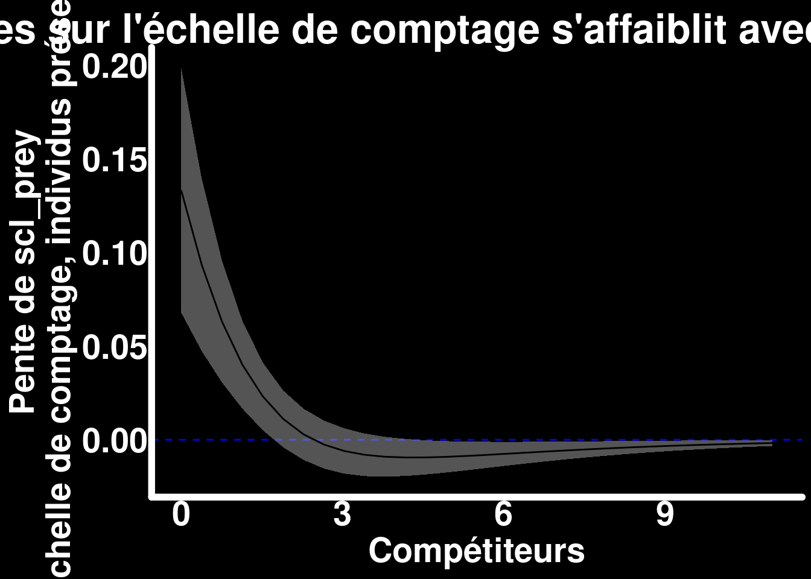
L’interaction sur l’échelle du lien
slopes(mod_hu, variables = "scl_prey",
newdata = datagrid(scl_competitors = seq(min(pop_data$scl_competitors),
max(pop_data$scl_competitors), length.out = 30)),
type = "link") |>
# unscale back to raw competitor counts for an interpretable x-axis
mutate(competitors = scl_competitors * sd(pop_data$competitors) + mean(pop_data$competitors)) |>
ggplot(aes(x = competitors, y = estimate)) +
geom_hline(yintercept = 0, color = "blue", linetype = 2) +
geom_ribbon(aes(ymin = conf.low, ymax = conf.high), alpha = 0.4, fill = "lightgrey") +
geom_line() +
labs(y = "Pente de scl_prey\n(échelle log)", x = "Compétiteurs",
title = "L'effet des proies sur l'échelle du lien décline linéairement avec les compétiteurs")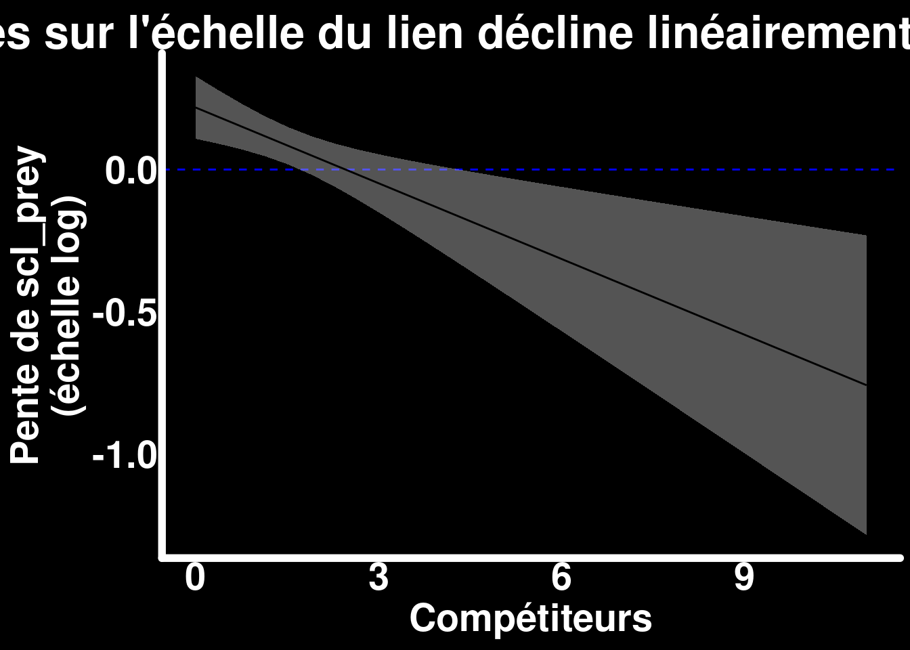
Contrairement au graphique sur l’échelle de comptage, celui-ci est linéaire en fonction des compétiteurs par construction — la formule du modèle (scl_prey * scl_competitors) est ajustée de façon additive sur l’échelle log, de sorte que l’interaction explicite apparaît ici comme une droite, sans courbure additionnelle provenant du lien log lui-même.
Isoler l’interaction : les ratios de taux
Pour isoler quelque chose de plus proche de « l’interaction elle-même », nous passons à l’échelle des ratios de taux : pour chaque augmentation d’un écart-type des compétiteurs, par quel facteur l’effet d’un écart-type supplémentaire de proies est-il multiplié ? C’est exp() du coefficient d’interaction, et comme il vit sur l’échelle additive (log) propre du modèle, il ne dépend pas de l’endroit où les compétiteurs sont évalués — contrairement à la pente sur l’échelle de comptage.
rate_ratio_interaction_tbl <- avg_slopes(mod_hu, variables = "scl_prey",
by = "scl_competitors",
newdata = datagrid(scl_competitors = c(-1, 0, 1)),
type = "link") |>
as_tibble() |>
mutate(rate_ratio = exp(estimate), rr_low = exp(conf.low), rr_high = exp(conf.high)) |>
select(scl_competitors, rate_ratio, rr_low, rr_high, p.value) |>
mutate(
across(c(rate_ratio, rr_low, rr_high), ~ round(.x, 3)),
p.value = if_else(p.value < 0.001, "<0.001", as.character(round(p.value, 3)))
) |>
mutate(CI_95 = glue::glue("[{rr_low}, {rr_high}]")) |>
select(`Competitors (scaled)` = scl_competitors, `Rate ratio for scl_prey` = rate_ratio, `95% CI` = CI_95, `p-value` = p.value)
rate_ratio_interaction_tbl |>
tt(caption = "Rate ratio of scl_prey's effect on abundance, evaluated at three levels of scl_competitors")| Competitors (scaled) | Rate ratio for scl_prey | 95% CI | p-value |
|---|---|---|---|
| -1 | 1.114 | [1.04, 1.192] | 0.002 |
| 0 | 0.956 | [0.865, 1.057] | 0.379 |
| 1 | 0.820 | [0.683, 0.986] | 0.035 |
Le ratio de taux des proies passe de >1 (abondance croissante) à faible densité de compétiteurs à <1 (abondance décroissante) à forte densité de compétiteurs.
Abondance prédite, selon le niveau de compétiteurs
predictions(mod_hu,
newdata = datagrid(
scl_prey = seq(min(pop_data$scl_prey), max(pop_data$scl_prey), length.out = 30),
scl_competitors = fivenum
),
type = "conditional"
) |>
mutate(prey = scl_prey * sd(pop_data$prey) + mean(pop_data$prey),
competitors = round(scl_competitors * sd(pop_data$competitors) + mean(pop_data$competitors), 1)) |>
ggplot() +
geom_ribbon(aes(x = prey, ymin = conf.low, ymax = conf.high, fill = as.factor(competitors)), alpha = 0.2) +
geom_line(aes(x = prey, y = estimate, color = as.factor(competitors))) +
labs(y = "Abondance prédite\n(si présent)", x = "Proies", color = "Compétiteurs", fill = "Compétiteurs")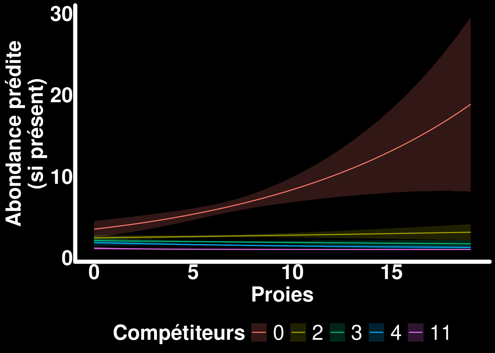
À faible densité de compétiteurs, l’abondance augmente fortement avec les proies; lorsque les compétiteurs sont abondants, la courbe des proies est presque plate — la même pente qui diminue, observée précédemment, maintenant montrée sous forme de tendances prédites plutôt que de pentes.
Portrait à l’échelle de la population : faible vs. fort couvert forestier
# Locate the two peaks of tree_cov's bimodal distribution, as scaled values
d <- density(pop_data$tree_cov)
peaks <- d$x[which(diff(sign(diff(d$y))) == -2) + 1]
low_tree_pop <- round(peaks[1], 2)
high_tree_pop <- round(peaks[length(peaks)], 2)
low_tree_pop_scl <- (low_tree_pop - mean(pop_data$tree_cov)) / sd(pop_data$tree_cov)
high_tree_pop_scl <- (high_tree_pop - mean(pop_data$tree_cov)) / sd(pop_data$tree_cov)
predictions(mod_hu,
newdata = datagrid(
scl_prey = seq(min(pop_data$scl_prey), max(pop_data$scl_prey), length.out = 30),
scl_competitors = fivenum,
scl_tree_cov = c(low_tree_pop_scl, high_tree_pop_scl)
),
type = "response"
) |>
mutate(prey = scl_prey * sd(pop_data$prey) + mean(pop_data$prey),
competitors = round(scl_competitors * sd(pop_data$competitors) + mean(pop_data$competitors), 1),
`Tree cover` = if_else(scl_tree_cov == low_tree_pop_scl, "Low tree cover", "High tree cover")) |>
ggplot() +
geom_ribbon(aes(x = prey, ymin = conf.low, ymax = conf.high, fill = as.factor(competitors)), alpha = 0.2) +
geom_line(aes(x = prey, y = estimate, color = as.factor(competitors))) +
facet_wrap(~ `Tree cover`) +
labs(y = "Abondance prédite dans la population", x = "Proies", color = "Compétiteurs", fill = "Compétiteurs")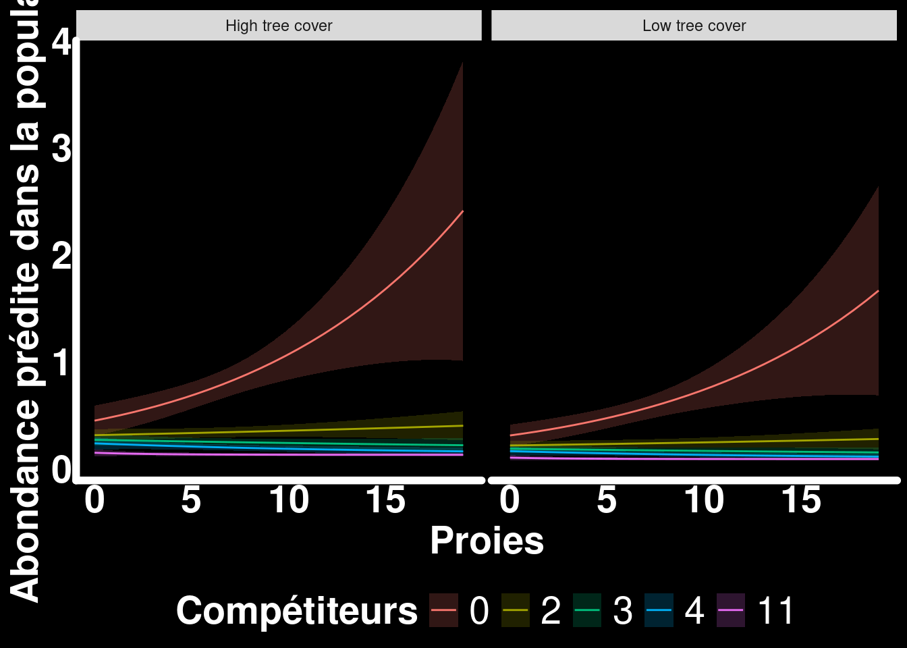
Dans chaque panneau, la forme de l’interaction proies × compétiteurs est la même. Mais le panneau à fort couvert forestier se situe globalement au-dessus du panneau à faible couvert forestier — davantage de parcelles y sont occupées. Le couvert forestier modifie surtout combien de parcelles ont l’espèce; les proies et les compétiteurs façonnent conjointement l’abondance au sein des parcelles occupées.
Une interaction symétrique, vue depuis l’autre prédicteur
predictions(mod_hu,
newdata = datagrid(
scl_competitors = seq(min(pop_data$scl_competitors), max(pop_data$scl_competitors), length.out = 30),
scl_prey = fivenum
),
type = "conditional"
) |>
mutate(competitors = scl_competitors * sd(pop_data$competitors) + mean(pop_data$competitors),
prey = round(scl_prey * sd(pop_data$prey) + mean(pop_data$prey), 1)) |>
ggplot() +
geom_ribbon(aes(x = competitors, ymin = conf.low, ymax = conf.high, fill = as.factor(prey)), alpha = 0.2) +
geom_line(aes(x = competitors, y = estimate, color = as.factor(prey))) +
labs(y = "Abondance prédite\n(si présent)", x = "Compétiteurs", color = "Proies", fill = "Proies")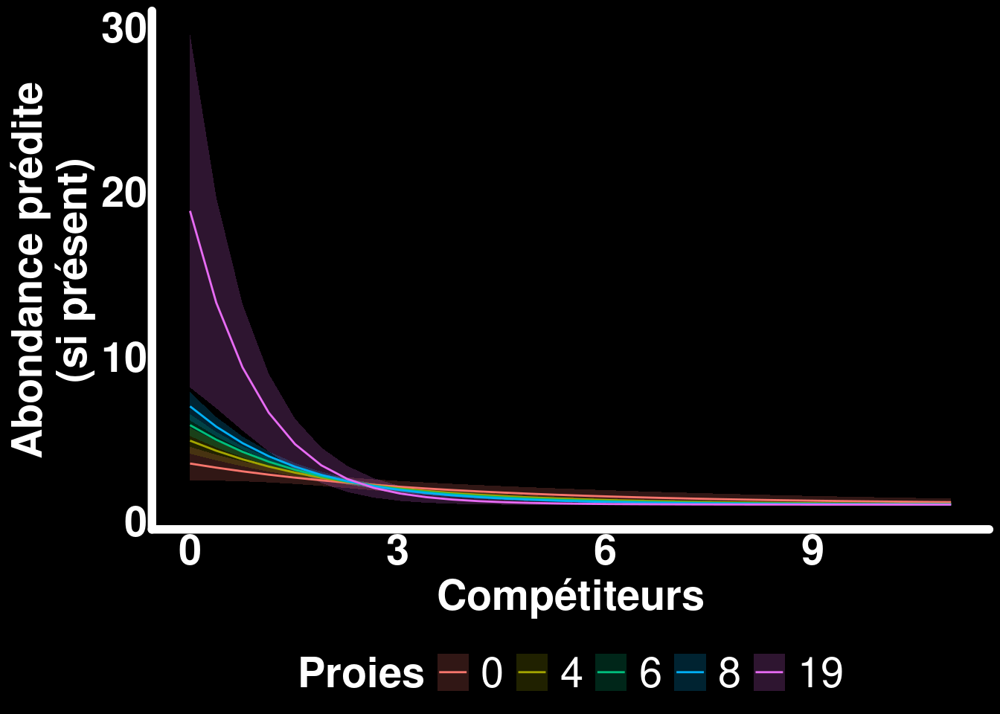
Une interaction à deux voies est mathématiquement symétrique : scl_prey:scl_competitors est le même coefficient que scl_competitors:scl_prey. Cette vue fait valoir un point différent du graphique avec les proies en x : indépendamment de la disponibilité des proies, suffisamment de compétiteurs font chuter l’abondance vers approximativement le même plancher. Aucun des deux graphiques n’est « plus correct » — n’en rapporter qu’un seul risque de ne montrer que la moitié de l’histoire (Spake et al. 2023).
Prédictions moyennes : une courbe par prédicteur
avg_pred_prey_cond <- avg_predictions(mod_hu,
newdata = datagrid(model = mod_hu,
scl_prey = seq(min(pop_data$scl_prey), max(pop_data$scl_prey), length.out = 30),
grid_type = "counterfactual"),
by = "scl_prey", type = "conditional"
) |>
mutate(prey = scl_prey * sd(pop_data$prey) + mean(pop_data$prey))
avg_pred_comp_cond <- avg_predictions(mod_hu,
newdata = datagrid(model = mod_hu,
scl_competitors = seq(min(pop_data$scl_competitors), max(pop_data$scl_competitors), length.out = 30),
grid_type = "counterfactual"),
by = "scl_competitors", type = "conditional"
) |>
mutate(competitors = scl_competitors * sd(pop_data$competitors) + mean(pop_data$competitors))
p_avg_prey_cond <- avg_pred_prey_cond |>
ggplot() +
geom_ribbon(aes(x = prey, ymin = conf.low, ymax = conf.high), fill = "lightgrey", alpha = 0.4) +
geom_line(aes(x = prey, y = estimate)) +
labs(y = "Abondance moyenne prédite\n(si présent)", x = "Proies")
p_avg_comp_cond <- avg_pred_comp_cond |>
ggplot() +
geom_ribbon(aes(x = competitors, ymin = conf.low, ymax = conf.high), fill = "lightgrey", alpha = 0.4) +
geom_line(aes(x = competitors, y = estimate)) +
labs(y = "Abondance moyenne prédite\n(si présent)", x = "Compétiteurs")
p_avg_prey_cond + p_avg_comp_cond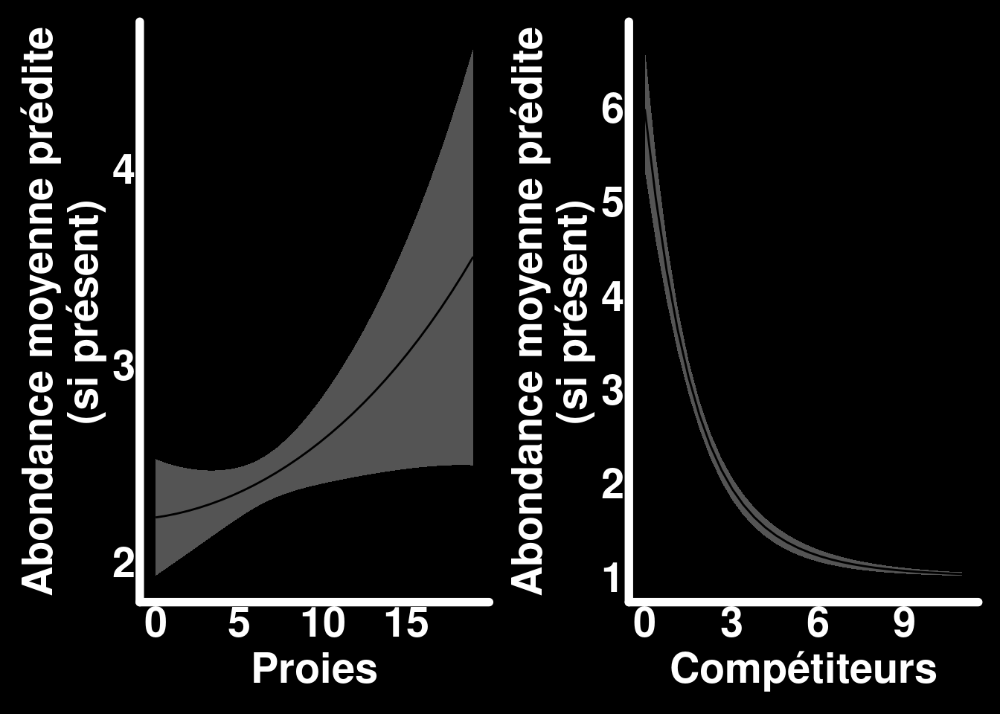
datagrid(..., grid_type = "counterfactual") associe chaque valeur focale à chaque ligne observée, puis fait la moyenne — une vraie moyenne sur l’échantillon plutôt qu’une pente évaluée aux moyennes des autres prédicteurs. En moyenne sur toute la densité observée de compétiteurs, les proies montrent toujours un effet positif; en moyenne sur toutes les proies observées, les compétiteurs montrent une forme de nuisance décroissante.
Moyenne à l’échelle de la population, selon le couvert forestier
avg_pred_prey_resp <- avg_predictions(mod_hu,
newdata = datagrid(model = mod_hu,
scl_prey = seq(min(pop_data$scl_prey), max(pop_data$scl_prey), length.out = 30),
scl_tree_cov = c(low_tree_pop_scl, high_tree_pop_scl),
grid_type = "counterfactual"),
by = c("scl_prey", "scl_tree_cov"), type = "response"
) |>
mutate(prey = scl_prey * sd(pop_data$prey) + mean(pop_data$prey),
`Tree cover` = if_else(scl_tree_cov == low_tree_pop_scl, "Low tree cover", "High tree cover"))
avg_pred_comp_resp <- avg_predictions(mod_hu,
newdata = datagrid(model = mod_hu,
scl_competitors = seq(min(pop_data$scl_competitors), max(pop_data$scl_competitors), length.out = 30),
scl_tree_cov = c(low_tree_pop_scl, high_tree_pop_scl),
grid_type = "counterfactual"),
by = c("scl_competitors", "scl_tree_cov"), type = "response"
) |>
mutate(competitors = scl_competitors * sd(pop_data$competitors) + mean(pop_data$competitors),
`Tree cover` = if_else(scl_tree_cov == low_tree_pop_scl, "Low tree cover", "High tree cover"))
p_avg_prey_resp <- avg_pred_prey_resp |>
ggplot(aes(x = prey, y = estimate, color = `Tree cover`, fill = `Tree cover`)) +
geom_ribbon(aes(ymin = conf.low, ymax = conf.high), alpha = 0.2, color = NA) +
geom_line() +
labs(y = "Abondance moyenne prédite\ndans la population", x = "Proies")
p_avg_comp_resp <- avg_pred_comp_resp |>
ggplot(aes(x = competitors, y = estimate, color = `Tree cover`, fill = `Tree cover`)) +
geom_ribbon(aes(ymin = conf.low, ymax = conf.high), alpha = 0.2, color = NA) +
geom_line() +
labs(y = "Abondance moyenne prédite\ndans la population", x = "Compétiteurs")
p_avg_prey_resp + p_avg_comp_resp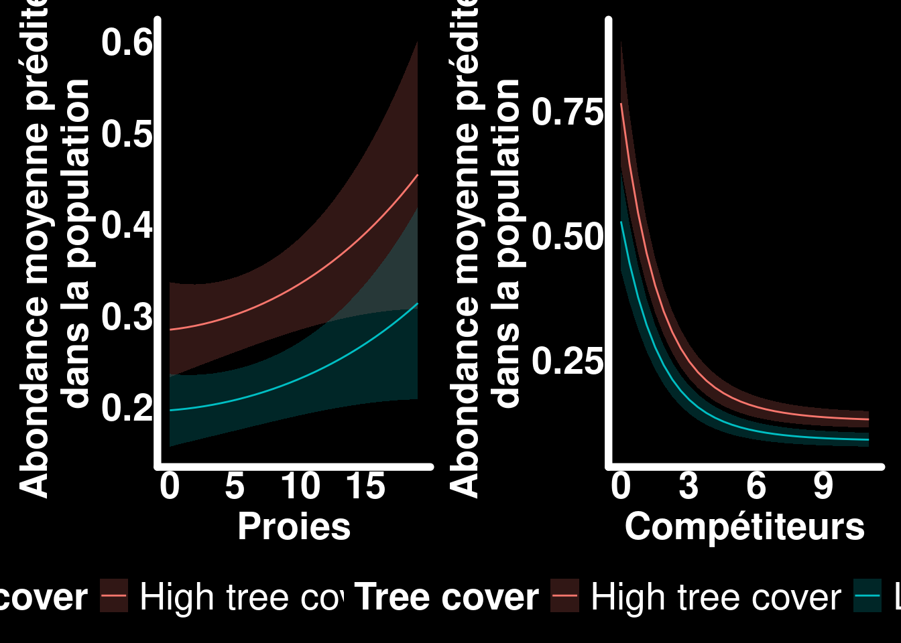
Les formes changent à peine entre les panneaux de couvert forestier — l’interaction proies × compétiteurs vit entièrement dans la partie « abondance si présent ». Ce qui change, c’est la hauteur globale : les populations à fort couvert forestier se situent systématiquement au-dessus de celles à faible couvert forestier, un pur effet d’occupation, nettement séparé de la forme de l’abondance si présent.
Un tableau complet de ratios de taux, par composante du modèle
# Conditional-model rate ratio for scl_prey, at three levels of scl_competitors
prey_rr_tbl <- avg_slopes(mod_hu, variables = "scl_prey", by = "scl_competitors",
newdata = datagrid(scl_competitors = c(-1, 0, 1)),
type = "link") |>
mutate(rate_ratio = exp(estimate), rr_low = exp(conf.low), rr_high = exp(conf.high),
Term = glue::glue("scl_prey (at scl_competitors = {scl_competitors} SD)")) |>
select(Term, rate_ratio, rr_low, rr_high, p.value)
# Conditional-model rate ratio for scl_competitors, at three levels of scl_prey
comp_rr_tbl <- avg_slopes(mod_hu, variables = "scl_competitors", by = "scl_prey",
newdata = datagrid(scl_prey = c(-1, 0, 1)),
type = "link") |>
mutate(rate_ratio = exp(estimate), rr_low = exp(conf.low), rr_high = exp(conf.high),
Term = glue::glue("scl_competitors (at scl_prey = {scl_prey} SD)")) |>
select(Term, rate_ratio, rr_low, rr_high, p.value)
# The interaction itself: ratio of rate ratios per 1-SD increase in the moderator
hu_confint <- confint(mod_hu)
hu_coef_cond <- summary(mod_hu)$coefficients$cond
hu_coef_zi <- summary(mod_hu)$coefficients$zi
interaction_rr_tbl <- tibble(
Term = "scl_prey:scl_competitors (interaction)",
rate_ratio = exp(hu_coef_cond["scl_prey:scl_competitors", "Estimate"]),
rr_low = exp(hu_confint["cond.scl_prey:scl_competitors", "2.5 %"]),
rr_high = exp(hu_confint["cond.scl_prey:scl_competitors", "97.5 %"]),
p.value = hu_coef_cond["scl_prey:scl_competitors", "Pr(>|z|)"]
)
# Zero-inflation-model odds ratio for scl_tree_cov (no moderator in this model)
zi_rr_tbl <- tibble(
Term = "scl_tree_cov (zero-inflation)",
rate_ratio = exp(hu_coef_zi["scl_tree_cov", "Estimate"]),
rr_low = exp(hu_confint["zi.scl_tree_cov", "2.5 %"]),
rr_high = exp(hu_confint["zi.scl_tree_cov", "97.5 %"]),
p.value = hu_coef_zi["scl_tree_cov", "Pr(>|z|)"]
)
hu_rr_tbl <- bind_rows(
prey_rr_tbl |> mutate(Component = "Conditional (abundance, when present)"),
comp_rr_tbl |> mutate(Component = "Conditional (abundance, when present)"),
interaction_rr_tbl |> mutate(Component = "Conditional (abundance, when present)"),
zi_rr_tbl |> mutate(Component = "Zero-inflation (occupancy, as an odds ratio)")
) |>
relocate(Component) |>
mutate(
across(c(rate_ratio, rr_low, rr_high), ~ round(.x, 3)),
p.value = if_else(p.value < 0.001, "<0.001", as.character(round(p.value, 3))),
CI_95 = glue::glue("[{rr_low}, {rr_high}]")
) |>
select(Component, Term, `Rate/odds ratio` = rate_ratio, `95% CI` = CI_95, `p-value` = p.value)
hu_rr_tbl |>
tt(caption = "Standardized rate ratios (conditional model) and odds ratio (zero-inflation model) for mod_hu") |>
style_tt(i = which(hu_rr_tbl$Component != dplyr::lag(hu_rr_tbl$Component, default = "")) - 1,
j = 1:5, line = "b", line_color = "black", line_width = 0.05)| Component | Term | Rate/odds ratio | 95% CI | p-value |
|---|---|---|---|---|
| Conditional (abundance, when present) | scl_prey (at scl_competitors = -1 SD) | 1.114 | [1.04, 1.192] | 0.002 |
| Conditional (abundance, when present) | scl_prey (at scl_competitors = 0 SD) | 0.956 | [0.865, 1.057] | 0.379 |
| Conditional (abundance, when present) | scl_prey (at scl_competitors = 1 SD) | 0.820 | [0.683, 0.986] | 0.035 |
| Conditional (abundance, when present) | scl_competitors (at scl_prey = -1 SD) | 0.539 | [0.468, 0.622] | <0.001 |
| Conditional (abundance, when present) | scl_competitors (at scl_prey = 0 SD) | 0.463 | [0.419, 0.511] | <0.001 |
| Conditional (abundance, when present) | scl_competitors (at scl_prey = 1 SD) | 0.397 | [0.348, 0.454] | <0.001 |
| Conditional (abundance, when present) | scl_prey:scl_competitors (interaction) | 0.858 | [0.78, 0.944] | 0.002 |
| Zero-inflation (occupancy, as an odds ratio) | scl_tree_cov (zero-inflation) | 0.837 | [0.756, 0.926] | <0.001 |
Le ratio de taux des proies croise 1 quelque part autour de la densité moyenne de compétiteurs (ce qui explique pourquoi son estimation brute de summary() ressemblait à du bruit); les compétiteurs suppriment davantage l’abondance à mesure que les proies augmentent; la ligne d’interaction (~0,81) est le seul nombre derrière ces deux motifs, et c’est le même nombre, peu importe le prédicteur traité comme modérateur — le point de symétrie vu quelques sections plus tôt, visible directement dans le tableau. Le ratio de cotes du couvert forestier dans la partie zéro-inflation raconte une histoire plus simple, sans interaction, concernant uniquement l’occupation.
🧪 Exercice 7 / Devoir
Appliquez maintenant ce que nous avons appris aujourd’hui à vos propres données !
Points à retenir de la Partie 3
- Les fonctions de lien non linéaires (logit, log) créent une interaction implicite : l’effet de chaque prédicteur sur l’échelle de réponse dépend des valeurs de tous les autres prédicteurs, même sans terme d’interaction dans la formule
- Les coefficients bruts d’un GLM vivent sur l’échelle du lien;
marginaleffects::slopes()les convertit pour vous vers l’échelle naturelle (probabilité, comptage) - Les résumés multiplicatifs (ratios de taux, ratios de cotes) restent constants sur toute l’étendue des autres prédicteurs; les résumés additifs, sur l’échelle de réponse, ne le restent pas
- Le fait qu’une interaction « existe » peut dépendre de l’échelle à laquelle on la mesure (Spake et al. 2023) — cela s’applique autant aux interactions implicites de fonction de lien qu’aux termes d’interaction explicites
- Les modèles hurdle/zéro-inflatés séparent « est-ce que ça se produit » de « combien, étant donné que ça se produit » — interprétez chaque partie séparément, ou combinez-les (
type = "response") pour une réponse à l’échelle de la population - Les interactions sont mathématiquement symétriques : rapportez (ou du moins vérifiez) à la fois « A modéré par B » et « B modéré par A »
Pour en savoir plus
- Articles complets avec détails supplémentaires et visualisations 3D : Partie 1, Partie 2, Partie 3
- Documentation de
marginaleffects: https://marginaleffects.com/ - Spake et al. (2023), sur les interactions dans les GLM : https://onlinelibrary.wiley.com/doi/full/10.1111/brv.12939
- Mize (2019), bonnes pratiques pour les effets d’interaction : https://sociologicalscience.com/articles-v6-4-81/